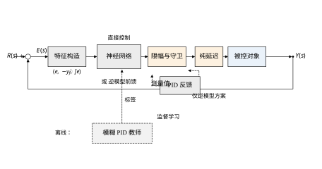
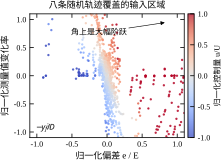
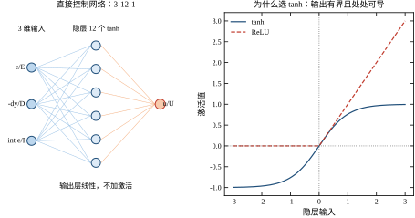
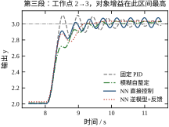
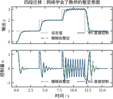
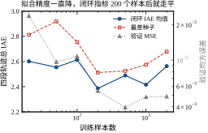
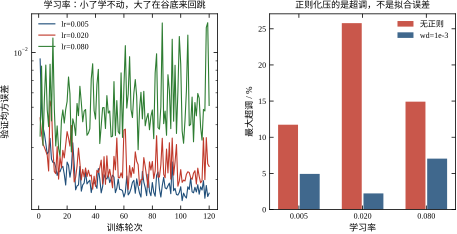
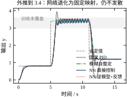
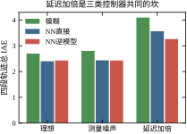
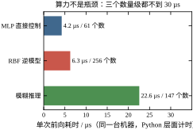

第 67 章的 49 个后件是手工填出来的：设计者先想清楚“偏差大、变化率为负时应该加多少推力”，再把这句话翻译成一个 -0.3 或 +0.6。填完之后还要用四段轨迹验证、用顶点系统检查，改一格就要重跑一遍。如果手头已经有一批“好”的控制记录——比如第 67 章那套模糊 PID 跑出来的数据——能不能不问设计者、直接从数据里把这 49 个数拟合出来？更进一步：如果连“偏差、变化率、控制量”这三者的关系都可以直接学，那还要不要先写成 PID 的形式？
这两个问题就是本章的起点。答案不是“能，所以更好”，而是“能，但学到的东西通常不超过教师，学到多少取决于数据、结构与正则化”。把这句话拆开、用可复现的数字讲清楚，是本章的任务。
第 67 章的规则表是一张 7\times7 的网格，格子里是三个修正量。若把这张表看成函数 \Delta K=f(e,\dot e)，它就是定义在 49 个节点上的分段线性插值。填表的过程本质上是在给这 49 个节点赋值；而一旦把“填表”换成“用一批样本拟合一个函数”，问题的性质就变了：不再需要设计者逐格判断，只需要给出输入输出对，剩下的交给优化。
这条思路可以再往前推一步。第 67 章的控制器结构是“模糊层改 PID 参数”，即网络的输出是三个增益；也可以让网络的输出直接是控制量 u，中间不再有 PID。前者叫参数型（网络只做整定），后者叫直接型（网络就是控制器）。本章两种都做，并用同一套对象、同一套指标与第 67 章对照。
需要提前说明的是监督学习的天花板。本章的直接控制网络用第 67 章的模糊 PID 作教师，标签就是教师的输出。这意味着网络最好也只能复现教师的行为；它在某些指标上超过教师，靠的是网络自身的平滑性去掉了教师的守卫与限幅带来的抖动，而不是“理解了控制问题”。这条边界在第 70 章的强化学习里才会被真正推开——那时标签不再来自教师，而来自回报。
抛开术语，本章用到的网络就是两层复合函数：
u=\sum_{j=1}^{12} w_j\tanh\!\Bigl(\sum_{i=1}^{3}v_{ji}x_i+b_j\Bigr)+c \tag{68-1}
输入 x=(e/E,\ -\dot y_f/D,\ \int e/I) 三维，隐层 12 个 tanh，输出一个标量。全部可调参数是 3\times12+12+12+1=61 个。训练就是找一组参数，让这 61 个数在给定样本上把误差压到最小。
这个形式与第 67 章的规则表其实是一回事的两面。规则表是“局部基函数的加权和”，网络是“全局基函数（tanh）的加权和”；前者可读、后者不可读，前者参数量随分辨率平方增长、后者随宽度线性增长。第 67 章那张表是 49 个后件加 5 个尺度，本章这个网络是 61 个权重。两者容量相当，这就是为什么后文的对照是公平的。
网络里唯一需要解释的选择是 tanh 而不是 ReLU。ReLU 在零点有折点，控制量会在输入穿过零点时出现斜率跳变；第 67 章讨论过“取小”造成的折线会让描述函数分析失效，这里是同一类问题。tanh 处处可导、输出有界在 (-1,1)，天然适合“输出要限幅”的场合。
算例沿用第 66、67 章的对象：y''=-2y'+K(y)u，K(y)=4+6y，即增益随工作点从 10 变到 22；采样 10 ms、纯延迟 5 拍、限幅 \pm1.2；设定值走四段 1\to2\to3\to1。训练数据是 8 条随机阶跃轨迹，共 16000 个样本，由第 67 章的模糊 PID 跑出来。
表 68-1 是四种控制器的实测结果，四段轨迹、同一套指标口径。
| 控制器 | 全程 IAE | 最大超调 | 控制量总变差 |
|---|---|---|---|
| 固定 PID | 2.997 | 50.23% | 36.6 |
| 模糊自整定（教师） | 2.698 | 1.09% | 27.9 |
| NN 直接控制 | 2.401 | 8.30% | 41.1 |
| NN 逆模型 + 反馈 | 2.429 | 0.86% | 14.8 |
这张表里有三件事值得先看。第一，直接控制网络的 IAE 比教师低 11%，但超调从 1.09% 涨到 8.30%，总变差也从 27.9 涨到 41.1——它靠更“敢”的动作换来了更小的积分误差，而不是靠更聪明的判断；68.6 节会把这 41.1 定位到高工况平台期的一个小振幅极限环上。第二，逆模型方案的总变差只有 14.8，不到固定 PID 的一半，因为前馈承担了大部分功率，反馈只做小修正。第三，四种控制器的 IAE 都在 2.4 到 3.0 之间，差距远小于第 67 章固定 PID 与模糊之间在超调上的差距——这提示“换控制器结构”的收益，未必大于“把守卫与限幅做对”。
初学者最常见的误解是：网络能自动发现 PID 想不到的控制律。本章的数据不支持这个说法。直接控制网络的 61 个权重，最终学到的映射在形态上就是一个“带积分记忆的非线性比例微分”——输入是 e、-\dot y_f、\int e，输出是 u，与 PID 的骨架相同，差别只在增益随状态变化。它没有引入新的信息通道，也没有预测未来，因此对延迟、对执行器饱和的态度与 PID 完全一样：延迟加倍时它的超调从 8.30% 涨到 20.82%，与模糊层的 29.16% 同属“扛不住”。
真正决定性能的是三件事，按重要性排序：输入里有没有未来的信息（本章没有，第 58、70 章有）、执行器有没有余量（限幅一收紧，谁都没辙）、反馈通路有没有被守卫保护（模糊层的守卫是它超调低的直接原因）。网络能改善的是“在给定信息下的映射精度”，这是第四位的事。
在动手之前，有三个问题必须先有答案。它们不是“选哪种网络”这种技术细节，而是决定这条路走不走得通的前置条件。
问题一：标签从哪里来？ 网络学的是映射，映射的样本必须有人给。三个来源：已有的控制器（教师）、实测的输入输出对、仿真模型。三者的可信度依次下降，可获得性依次上升。如果三个都拿不到——既没有能用的控制器，也不允许做激励实验，还没有可信的模型——那这条路直接堵死，不必往下看。
问题二：特征里有没有让问题变成单值的信息？ 68.6 节会证明，本章的特征缺了工作点，导致标签不是特征的单值函数，误差有地板。这个问题在设计阶段就能发现：把特征与标签画成散点，看同一特征位置上是否对应多个不同标签。如果有，要么补特征，要么接受地板。事后调参是补不回来的。
问题三：网络失效时怎么办？ 这个问题必须在上线前回答，不能等出事再想。答案通常有三种：限幅（限制最坏后果）、弱反馈兜底（逆模型方案的做法）、切回传统控制器（双缓冲）。三种都要预先设计并测试，不能只写在文档里。
这三个问题的答案会直接改变后面的设计。本章的答案是：标签来自第 67 章的模糊 PID；特征不完备，接受地板（并在 68.9 节给出补救方案）；失效靠限幅加监测兜底，因为直接控制外面没有反馈可依赖。读者若换一个对象，这三个答案可能完全不同，后面的参数与结论也要跟着变。
图 68-1 是本章的结构：参考信号与测量值相减，构造出三个特征送进网络，网络输出控制量，经限幅与延迟作用到对象上。虚线部分是训练通路——教师离线跑出数据，标签进网络，运行时教师不参与。逆模型方案在图的下方多一条前馈支路：网络给出 u_{ff}，PID 只补残差。

后面的安排是：68.2 节给出网络、训练目标与逆模型控制的数学；68.3 节讲数据从哪来、怎么划分、怎么做归一化；68.4、68.5 节分别在连续与离散两种视角下看这两种结构；68.6 节做稳定性与性能的对照；68.7 到 68.9 节讨论参数、调参与改进；68.10 节讲工程落地的三件事——训练数据获取、实时推理算力、模型更新；68.11 节给适用边界；68.12 节是代码。
式 (68-1) 写成矩阵形式，把 3 维输入映到 12 维隐层、再压成 1 维输出：
H=\tanh\!\bigl(Vx+b\bigr),\qquad u=w^{\mathsf T}H+c \tag{68-2}
其中 V\in\mathbb{R}^{12\times3}、b\in\mathbb{R}^{12}、w\in\mathbb{R}^{12}、c\in\mathbb{R}，共 61 个参数。tanh 逐元素作用。整个映射对参数是光滑的，对输入也是光滑的——这一点在 68.6 节讨论稳定性时会用到。
逆模型用的是另一种参数化，径向基函数：
u=\sum_{j=1}^{64}w_j\exp\!\left(-\frac{\lVert x-c_j\rVert^2}{2\sigma^2}\right),\qquad \sigma=0.55 \tag{68-3}
中心 c_j 用 k-means 从训练数据里选，共 64\times3=192 个数；输出权重 w 共 64 个，合计 256 个参数。注意这里的结构差别：MLP 的每个基函数都是全局的（tanh 在整个输入空间都有非零响应），RBF 的每个基函数只在中心附近有效。全局支撑意味着参数之间强耦合、必须迭代训练；局部支撑意味着“改一个中心附近的权重只影响那一块”，于是输出层对 w 是线性的，可以闭式求解：
w=\bigl(\Phi^{\mathsf T}\Phi+\lambda I\bigr)^{-1}\Phi^{\mathsf T}y,\qquad \Phi_{kj}=\exp\!\left(-\frac{\lVert x_k-c_j\rVert^2}{2\sigma^2}\right) \tag{68-4}
本章取 \lambda=10^{-4}。这个 \lambda 的作用与 MLP 的权重衰减相同：\Phi^{\mathsf T}\Phi 在数据稀疏的区域接近奇异，加一点对角项把它拉回可逆。
两种参数化的容量相当（61 对 256），但训练方式完全不同：一个靠梯度迭代、一个靠一次线性求解。本章把两者都放进算例，正是为了说明“网络”不是一个方法，而是一族参数化方式，选哪一种取决于你要的是可迭代（能在线更新）还是可复算（每次结果一致）。
训练要最小化的是
J(\theta)=\frac{1}{N}\sum_{k=1}^{N}\bigl(u_\theta(x_k)-u_k\bigr)^2+\lambda_w\lVert W\rVert^2 \tag{68-5}
第一项是网络输出与教师输出的均方误差，第二项是权重衰减。这个目标与“四段轨迹的 IAE”不是一回事，中间的错位有三层，值得逐层说清。
第一层是分布错位。 训练样本来自教师跑出的轨迹，而闭环运行时网络自己决定控制量，走出的状态分布与教师不完全相同。教师在某处收得快，网络可能收得慢，于是它见到的 (e,\dot e) 组合是训练集里没有的。这是模仿学习里的经典问题，第 70 章用“专家纠正”（DAgger 类）缓解，本章不处理，只在 68.11 节列为边界。
第二层是指标错位。 均方误差对所有样本一视同仁，而闭环 IAE 由少数几个大偏差段主导。网络在大量“平稳段”样本上把误差压得再小，对第三、四段的超调也未必有帮助；反过来，为了压住某几个大偏差样本，它可能在平稳段引入抖动，总变差因此上升。68.1 节表 68-1 里直接控制网络“IAE 更低、变差更高”就是这个错位的直接表现。
第三层是稳定性错位。 均方误差里没有任何相位信息。两个网络可以在验证集上有相同的 MSE，但一个在闭环里稳定、另一个在延迟加倍时振荡——因为决定稳定的是“误差到控制量”这个映射在高频段的相位，而训练数据里几乎没有高频成分。
三层错位加起来，得到一个实践结论：验证损失只能用来筛掉明显没训好的模型，不能用来选最终模型。68.6 节的所有取舍都以闭环指标为准，MSE 只作为参考列在旁边。
式 (68-5) 用的是均方误差，这个选择值得解释，因为它直接决定了闭环的行为。
从统计上看，平方损失等价于假设标签里叠加了高斯噪声，此时最小化平方损失就是极大似然估计。从控制上看，平方损失对大偏差的惩罚是二次的、对小偏差是线性的——这意味着网络会把容量优先用来压那些大偏差样本。这个偏好恰好符合控制的需要：大偏差危险，小偏差可以容忍。
换成绝对值损失，大偏差的权重就变成线性的，网络会更“平均”地对待所有样本，拟合出的映射在零附近更陡、在大偏差处更软。这对超调有利（零邻域陡），对 IAE 不利（大偏差段软）。68.9 节的“零邻域加权”其实就是在平方损失的基础上手动实现这种偏好，而不是换损失函数——因为加权比换损失更容易控制力度。
那么能不能直接用 IAE 当损失？理论上可以，实践上不行，原因有三条。第一，IAE 要在闭环里算，每个样本的梯度都需要跑一次完整仿真，训练一次的代价从“一次矩阵乘法”变成“一千次仿真”。第二，闭环对参数的影响是间接的——网络输出变化一点，轨迹就变一点，梯度的信噪比极低。第三，闭环仿真在参数不好时会发散，损失变成 NaN，训练直接崩掉。这三条叠加起来，使得“用闭环指标直接训”在实践中几乎不可行；本书第 70 章讲强化学习时会看到，那套方法用了几十种技巧（经验回放、目标网络、奖励缩放）才勉强让这条路径可用。
还有一个小选择：损失里要不要除以样本数。本章除以了，得到的是“每个样本的平均平方误差”，量级在 10^{-2}，便于阅读；不除也可以，只是学习率要跟着缩放。这个选择本身没有对错，但训练代码与调参记录必须一致，否则换一份代码就复现不出同样的曲线。
RBF 与 MLP 的差别不只是“径向基”与“S 形”这两种形状，更根本的是参数出现在哪一层。
MLP 的输出是 u=\sum_j w_j\tanh(v_j^{\mathsf{T}}x+b_j)+c，参数 v_j 藏在 tanh 里面，输出对 v_j 是非线性的，所以只能用梯度法一步步逼近。RBF 的输出是 u=\sum_{j=1}^{m}\lambda_j\varphi(\|x-c_j\|/\sigma)+\lambda_0，中心 c_j 与宽度 \sigma 定下来之后，输出对权重 \lambda 是线性的，线性最小二乘有闭式解 \lambda=(\Phi^{\mathsf{T}}\Phi+\lambda_rI)^{-1}\Phi^{\mathsf{T}}Y，其中 \Phi_{kj}=\varphi(\|x_k-c_j\|/\sigma) 是设计矩阵。
这个解的代价是一次 m\times m 矩阵求逆加一次矩阵乘法。m=64 时是 64^3\approx2.6\times10^5 次浮点运算，毫秒级完成，且不需要学习率、不需要迭代、不会卡在局部极小。这是 RBF 在离线场合的最大优势——训练变成了一次线性代数。
代价有三条。第一，中心是两步选的（先 k-means 后回归），不是联合优化的，所以得到的不是全局最优，只是“给定中心下的最优权重”。第二，m 大了之后求逆代价按 m^3 增长，m=1000 时是 10^9 量级，离线还能忍，在线更新就不行了。第三，\Phi^{\mathsf{T}}\Phi 的条件数随 m 增长很快，\lambda_r=10^{-4} 的作用主要是把它压住，防止求逆数值不稳——这也是为什么 RBF 几乎总带一个岭回归项，而不是纯最小二乘。
两条路线的选择因此很清楚：要在线更新或数据流式到达，用 RBF（可增量求解）；要极致的参数效率或输入维数高，用 MLP（参数随宽度线性增长）。 本章两个都用，正是为了让读者看到这个分工。
式 (68-2) 的梯度不难推。记 \delta_o=2(u_\theta-u)/m（m 是批大小），则
\nabla_w=\delta_o H,\qquad \nabla_c=\delta_o,\qquad \nabla_V=\bigl[(\delta_o w)\odot(1-H^2)\bigr]x^{\mathsf T},\qquad \nabla_b=(\delta_o w)\odot(1-H^2) \tag{68-6}
其中 \odot 是逐元素乘。1-H^2 是 tanh 的导数——这也是选 tanh 的另一个理由：导数只需用输出本身算出来，不必额外存一份。
有了梯度，更新规则用 Adam：
m_t=\beta_1m_{t-1}+(1-\beta_1)g_t,\qquad v_t=\beta_2v_{t-1}+(1-\beta_2)g_t^2,\qquad \theta_t=\theta_{t-1}-\eta\,\frac{m_t/(1-\beta_1^t)}{\sqrt{v_t/(1-\beta_2^t)}+\epsilon} \tag{68-7}
本章取 \beta_1=0.9、\beta_2=0.999、\epsilon=10^{-8}、批大小 32、学习率 0.05、200 轮。用 Adam 而不是纯梯度下降，原因很实际：三个输入特征的量纲虽然都归一化到 \pm1，但它们的敏感度差很多（积分项变化慢、微分项变化快），各维梯度尺度相差一到两个数量级，统一学习率下要么积分项学不动、要么微分项来回跳。Adam 对每一维单独缩放步长，省掉了手工调各维学习率的工作。
代价是内存：每个参数要额外存一阶、二阶矩，61 个参数变成 183 个数。这在训练时无所谓，在嵌入式部署时值得记一笔——但部署时只需要前向，不带动量项，所以这条代价不影响实时性。
逆模型控制的想法很直接：如果知道对象的逆 u=G^{-1}(y,\dot y,\ddot y)，那么把期望轨迹代进去就得到前馈控制量。本章对象的逆有解析形式
u=\frac{\ddot y+2\dot y}{K(y)},\qquad K(y)=4+6y \tag{68-8}
这个式子说明了逆模型控制的两个前提：K(y)\neq0（对象不失去能控性），以及 \ddot y 必须存在且有界。第二个前提在阶跃设定值上立刻出问题——阶跃的二阶导数是冲激，直接代进式 (68-8) 会得到一个无穷大的前馈。所以参考信号要先过滤波器：
\ddot x_1=\omega_n^2(r-x_1)-2\zeta\omega_nx_2,\qquad \dot x_1=x_2,\qquad \omega_n=6,\ \zeta=1 \tag{68-9}
滤波后的 (x_1,x_2,\ddot x_1) 就是 (r_f,\dot r_f,\ddot r_f)，三者都有界、都光滑。这一步不是可选的技巧，而是逆模型控制能成立的前提：逆模型的定义域只包含光滑轨迹，训练数据里的 \ddot y 也是从实际轨迹差分来的，天然有界，网络从没见过冲激，也就不该被要求处理冲激。
前馈之外还要反馈，因为逆模型不可能完全准：
u=u_{ff}+k_p(r-y)-k_d\dot y_f+k_i\!\int\! e,\qquad u_{ff}=N(r_f,\dot r_f,\ddot r_f) \tag{68-10}
本章取 k_p=1.6、k_d=0.30、k_i=0.05，比第 67 章的 PID 小得多（那里 K_p=2.60）。这是逆模型方案的结构性优势：前馈承担主要功率，反馈只补残差，因此同样的跟踪精度下控制量总变差只有 14.8，不到固定 PID 的 41%。反过来说，前馈一旦失准（比如外推到训练范围之外），弱反馈就撑不住——68.6 节的外推实验会看到这一点。
式 (68-8) 已经给出了本章对象的精确逆。既然精确解就在手边，用 256 个参数去拟合它，除了演示“网络能学”之外没有工程价值。这一点必须说破，否则本章容易被误读成“逆模型控制必须用网络”。
网络在这里的价值只有一个：当式 (68-8) 写不出来的时候，它能从数据里逼近同一个映射。什么时候写不出来？对象含未建模的摩擦、死区、磁滞，或者 K(y) 本身没有解析形式。此时解析逆不存在，而在对象上采集的输入输出对仍然存在，网络就有了用武之地。换句话说，网络的定位是“模型未知时的替代品”，不是“模型已知时的升级品”。
同理，本章的直接控制网络用教师做标签，教师就是模糊 PID。如果教师已经在手边、且性能可接受，那么训练一个网络去模仿它，唯一的收益是运行时的推理速度（68.10 节会给数字），代价是多了一套训练流程和一份不可读的参数。这笔交换值不值，取决于部署环境，不取决于算法先不先进。
神经网络控制常被赋予一个诱人的前景：让网络边控边学，自动适应对象变化，从此不需要建模、不需要重训。本章的方案明确不这么做——网络训练完就冻结，运行中一个权重都不改。这不是保守，是三条硬约束。
第一条：在线时没有标签。 监督学习需要一个“正确答案”，而闭环运行时唯一的反馈是标量性能（偏差、超调），它延迟、稀疏、且混着设定值变化的干扰。用这个信号去改权重，实质上是在做强化学习，样本效率比监督学习低两三个数量级——在线跑几个小时的数据量，抵不上离线采集十分钟。
第二条：更新过程本身不可验收。 冻结的网络可以用一整套离线与闭环测试来验收，验收通过再上线。而在线学习的每一次权重更新都是一个未经测试的新控制器，它的稳定性没有任何保证；更麻烦的是“哪一次更新把它弄坏了”无法回溯，因为权重一直在变。
第三条：会忘。 在线数据是按当前工况顺序到来的，网络会向最近的样本倾斜，把之前学到的区域覆盖掉。若对象在低工况下稳定运行一周，网络对高工况的记忆会明显退化，等到高工况再来时，性能比投运初期还差。这不是理论担忧，是增量学习的固有问题，缓解手段（经验回放、弹性权重固化）都要额外存储和额外计算，在 61 个参数的规模上不值得。
所以本章走的是“先学后用”：离线造数据、离线训练、离线验收、冻结上线，对象变了就回到第一步重训（68.10 节给了触发条件与影子模式）。这条路线牺牲了自适应能力，换来了可验证性。对本算例这种“对象基本不变、工况有限”的场合，这笔交换是划算的；若对象在运行中持续漂移（比如催化剂缓慢失活），那就必须考虑带约束的在线修正，但那是另一套设计，需要把“更新”本身也纳入稳定性分析。
网络在这套结构里可以坐三个不同的位置，三者的数据要求、先验要求和失败方式完全不同，选错位置比调错参数严重得多。
第一种是学整个控制器，也就是直接控制：输入是 (e,\dot e,\int e)，输出是 u。网络替代的是第 67 章那张规则表加比例因子，外面不再有任何 PID。这种做法的数据只能来自一个已经在工作的控制器，因为没有教师就没有标签。它天然继承教师的水平上限，同时继承了教师的状态分布。
第二种是学对象的逆：输入是 (y,\dot y,\ddot y)，输出是 u，作为前馈与一个弱反馈并联。此时网络替代的是对象的模型，不是控制器。它的数据可以来自任何把对象激励起来的实验，不必由某个教师产生，这一点在数据获取上自由得多。
第三种是只学参数：输入仍是 (e,\dot e)，输出是 (K_p,K_i,K_d) 三个数，后面接标准 PID。网络很小（本章若这样做只需要不到 30 个参数），失败方式也最温和——最坏情况是参数停在一个不好的常数值上，闭环退化成固定 PID，而不是变成一个行为未知的非线性环节。
表 68-2 把三者并排。本章两种都做：直接控制走第一种，逆模型走第二种，目的是让读者看到两种失败方式长什么样。选择第一种还是第二种，判断依据不是“哪个更先进”，而是你手上有什么数据：只有教师轨迹就选第一种，能对对象做激励实验就选第二种。
| 对比项 | 直接控制 | 逆模型控制 | 只学参数 |
|---|---|---|---|
| 网络输入 | e,\ \dot e,\ \int e | y,\ \dot y,\ \ddot y | e,\ \dot e |
| 网络输出 | u | u_{ff} | K_p,K_i,K_d |
| 数据来源 | 教师闭环轨迹 | 对象激励实验 | 教师闭环轨迹 |
| 外环反馈 | 无（全靠网络） | 弱 PID 补残差 | 标准 PID |
| 典型失败 | 离开教师分布即失准 | 前馈失准、反馈撑不住 | 参数卡死，退化为定常 |
| 可解释性 | 差 | 中（前馈有物理含义） | 好（三个增益可直接读） |
本章的教师就是第 67 章的模糊自整定 PID。数据生成不用本章的四段测试轨迹，而是另造 8 条随机轨迹：每条 20 s，随机切成 5 段，段切换时刻在 [1.5,18] s 内均匀抽取，每段幅值在 [0.5,3.0] 内均匀抽取。用随机轨迹而不是测试轨迹，理由很直白——拿考卷当练习册，测出来的分数没有意义。
每条轨迹 2000 个采样点（T_s=0.01 s），8 条共 16000 个样本，按 8:2 随机划分为训练集 12800、验证集 3200。划分是按样本随机打乱的，不是按轨迹切分。这一点值得停一下：按轨迹切分能检验“对没见过的轨迹泛化”，听起来更严格；但闭环运行时网络面对的是同一条轨迹内的连续状态，它与训练样本的相关性恰恰更接近随机划分。按轨迹切分会让验证损失与闭环表现差得更远，用它做模型选择反而更容易选错。本章要检验的是闭环行为，所以用随机划分，然后用闭环指标做最终裁决，验证损失只用来筛掉明显没训好的模型。
数据本身还有一个必须承认的偏差，图 68-3 把它画了出来：横轴是归一化偏差，纵轴是归一化变化率，颜色是教师给出的控制量。所有点都挤在一条斜带里，因为闭环轨迹上的 e 与 \dot e 不是独立的——偏差大时对象正在被推动，变化率必然也大。也就是说，16000 个样本实际只覆盖了 (e,\dot e) 平面上一维的流形。平面右上角（大偏差且仍在远离）和左下角（小偏差且仍在接近）几乎空白，网络在那里的输出纯属外推。这不是本章数据集的毛病，而是所有闭环模仿学习的共同特征。

三个特征的量纲差得很远：偏差在 \pm2 量级，滤波后的变化率在 \pm1 量级，积分在 \pm4 量级。送进网络前一律除以固定常数：
x_1=\frac{e}{E_N},\qquad x_2=\frac{-\dot y_f}{D_N},\qquad x_3=\frac{\operatorname{sat}\!\left(\int e,\pm E_I^{c}\right)}{E_I} \tag{68-11}
本章取 E_N=1.60、D_N=1.40、E_I=2.50、E_I^{c}=4.0。这三个数不是调出来的，是按“希望网络在多大范围内保持灵敏”倒推的：E_N 取略小于最大阶跃幅值 2.0，让最常见的偏差落在 \pm1 附近；D_N 取轨迹最快段的斜率量级，让变化率在多数时刻不至于挤出 \pm1；E_I 取积分在典型调节时间（约 2 s）内累积的量，再对积分做 \pm4.0 的硬限幅，防止长时偏差把第三通道压死。
第二通道前面带一个负号，容易看漏。原因是 \dot y 与 u 同向：测量值上升意味着控制量偏大，应当减小。网络如果学 +\dot y，就必须在权重里自己学出这个负号，而它的输入分布是斜的，学起来慢且不稳。把符号放到特征里，等于把已知的物理先验直接送给网络，这是免费的。
还有一处细节：\dot y_f 是滤波后的变化率，滤波时间常数取 \tau=0.05 s，与第 67 章微分滤波的 T_{\mathrm{lp}} 一致。用原始差分不行——仿真里采样周期 0.01 s、状态没有噪声时看着很干净，一旦加 0.01 的测量噪声，差分会把噪声放大约 100 倍，第三通道立刻被噪声主导，网络学到的全是噪声的统计特性。
归一化用固定常数而不是逐样本标准化，是一个有意的取舍。逐样本标准化（减均值除标准差）在离线训练时能让损失曲面更圆，但部署时要在控制器里存统计量、每拍算一次均值方差，还要处理“运行分布漂移后统计量过期”的问题。固定常数把归一化变成了一个电阻分压式的标定，改采样周期时只需要改这几个常数。
直接控制用 3-12-1 的 MLP：3 个输入、12 个 tanh 隐元、1 个线性输出，共 3\times12+12+12\times1+1=61 个参数。图 68-2 左边是结构，右边是隐元的激活曲线。
为什么是 12 个隐元？训练样本 12800，参数 61，样本参数比约 210:1。按经验，这个比例超过 10:1 之后继续加宽带来的收益就很小了，而 68.9 节的样本量曲线会给一个更硬的证据：样本从 200 加到 2000，验证损失降了一个数量级，闭环 IAE 却基本没动。也就是说，瓶颈不在网络容量，而在数据覆盖和指标错位。把隐元加到 32 只会让参数变多、推理变慢，不会让闭环变好。
RBF 网络用 64 个中心，\sigma=0.55，岭回归系数 \lambda=10^{-4}。参数共 64\times3+64=256 个。选 RBF 而不是再训一个 MLP，原因是它的输出层是线性的，闭式解一次算完（式 68-4），不需要调学习率，也不会出现“这次初始化运气不好”的问题。代价是中心数随输入维数增长很快：三输入 64 个中心够用，十输入就需要指数级更多的中心，这正是维数灾难在 RBF 上的具体表现。
两种网络在工程上的差别可以归结成一句话：MLP 训练麻烦、推理快、参数省；RBF 训练一次成型、推理慢、参数多。68.10 节给的实测是 MLP 单次前向约 4.2 µs、RBF 约 6.5 µs，差了五成多，两者相对 10 ms 控制周期都可以忽略不计。所以在这个算例里，选哪个主要看“有没有耐心调超参”，而不是看算力。

离线验证损失只能做粗筛。本章的验收分两层：第一层看验证 MSE 是否落在 10^{-2} 量级以下（说明网络至少把教师的映射学到了大致形状），第二层看闭环 IAE、最大超调、控制量总变差三项是否同时不劣于教师。
第二层里有一项容易被忽略：退化检查。做法是把网络换成一个“故意坏掉”的版本，看闭环是否如预期地坏，以此确认性能确实来自网络而不来自别的地方。本章做三个：
验收判据写成两条不等式：
\frac{\mathrm{IAE}_{\text{net}}}{\mathrm{IAE}_{\text{teacher}}}\le1.0,\qquad \frac{\mathrm{OS}_{\text{net}}}{\mathrm{OS}_{\text{teacher}}}\le2.0 \tag{68-12}
第一条要求网络不劣于教师，这是模仿学习的及格线；第二条允许超调翻倍，因为超调对分布错位极其敏感，卡得太死会让所有候选模型都通不过。本章的实测是直接控制 IAE 2.401 对教师 2.698（比值 0.89）、超调 8.30% 对 1.09%（比值 7.6，不满足第二条）。这个结果没有掩饰的必要：网络在总偏差上赢了教师，在超调上输得很明显，原因在 68.5 节解释——教师是“逐拍查表”，网络是“光滑拟合”，后者在阶跃刚发生时给出的控制量偏软，等偏差累积起来才补上，于是超调变大。这是结构性的，不是训练不够。
验收不通过是常态，难的是判断该改哪里。新手常犯的错是直接从最贵的地方改起——回去加隐元、加层、重训一晚上，结果发现真正的问题在归一化常数写错了一位。这一节给一个固定的回查顺序，原则只有两条：先查便宜的后查贵的，先查上游的后查下游。
第一查：特征口径是否与训练时一致。 这是成本最低、命中率最高的一条。逐项比对三件事：三个归一化常数、滤波时间常数 \tau、差分与积分的实现方式（是不是同一种“上一拍减当前拍”的方向）。任何一项错位，闭环都会表现为“整体偏软或偏硬”，而离线验证损失完全看不出来，因为训练时用的是正确的口径。本章的代码把这三件事集中在 ch068_sim.py 顶部的五个常量里，就是为了让比对只需要看五行。
第二查：标签是不是特征的单值函数。 做法很直接：在验证集里对每个样本找最近的 k 个邻居，看它们的标签方差。若某片区域里特征几乎相同而标签分散，说明映射本身不单值，误差地板就在这里，再怎么加容量也压不下去。68.6 节给出的地板是 10^{-3} 量级，对应的正是工况分档造成的那道断层。
第三查：训练数据覆盖了当前工况没有。 判据是特征是否落在训练分布的边缘之外。这一条与第一查不同：第一查是“口径错”，这一条是“口径对但没数据”。表现是低工况正常、高工况发散，或者设定值一大就过冲，正是 68.8 节外推实验的形状。
第四查：容量够不够。 只有前三查都过了，才轮到容量。判据是训练损失与验证损失是否都停在一个明显偏高的平台，且增加隐元或中心数后能继续下降。68.7 节的中心数实验给了一个反例：验证 MSE 在 m=64 之后已经饱和，这时候再加容量是纯粹的浪费。
第五查：训练是否到位。 训练损失远高于验证损失说明正则过强或学习率太小；两者都高且曲线还在下降说明轮数不够；训练损失很低而验证损失高才是过拟合。三种情形的处置完全不同，所以必须先把两条曲线分开看，不能只看一个数。
第六查：闭环结构本身有没有兜底。 若离线指标已经不错而闭环仍然抖，问题就在结构而不在网络：直接控制没有反馈兜底，局部增益一高就会振（68.6 节的极限环）；逆模型方案则要看 k_p 是否给得太小。这一步要动的是结构，改完必须重新验收，不能只改代码不重测。
这六步的顺序不是随便排的。前两查几分钟就能做完，却覆盖了实践中最常见的两类错误；后两查要重训，成本高一个量级；最后一查要改结构，成本最高。按这个顺序走，多数问题在前两步就能定位。
把采样周期想象成趋于零，本章的直接控制律可以写成一个连续时间的静态映射：
u(t)=N\!\left(e(t),\,-\dot y_f(t),\,\int_0^t e(\tau)\,\mathrm{d}\tau\right) \tag{68-13}
注意这个式子里没有任何状态属于网络。网络的“动态”全部来自输入端的微分器和积分器，它自己只是一个把三维向量映到一维标量的函数。这一点与第 67 章的模糊层完全同构：模糊层也是静态映射，动态同样来自外面的积分器和微分滤波器。两章的区别只在 N 是怎么造出来的——一张人写的规则表，还是一组从数据里拟合出的参数。
认清这一点，很多疑问会自动消解。比如“网络控制器要不要处理积分饱和”——不需要，因为积分在外部，饱和处理也在外部，网络看到的只是已经限幅过的积分值。比如“网络控制器的初始状态怎么设”——没有初始状态。比如“两次运行结果为什么完全一样”——因为没有内部状态，给定同样的输入序列必然给出同样的输出序列，可重复性比带状态的自适应律好得多。
代价同样清楚：N 是无记忆的，它表达不了“历史路径依赖”。真实对象里的磁滞、齿隙、摩擦的方向记忆都属于这一类。要让网络表达记忆，就得把状态显式喂进去——把过去几拍的 u 或 y 拼到输入里，或者用带反馈的循环结构。前者把输入维数乘以窗口长度，后者失去闭式解和可重复性。本章的对象没有这类记忆，所以不付这份代价。
把 N 在当前工作点附近一阶展开，可以得到它的局部增益：
\left.\frac{\partial N}{\partial e}\right|_{0}=\hat k_p,\qquad \left.\frac{\partial N}{\partial(-\dot y_f)}\right|_{0}=\hat k_d,\qquad \left.\frac{\partial N}{\partial\!\left(\int e\right)}\right|_{0}=\hat k_i \tag{68-14}
三个偏导就是网络在那个工作点上的等效 PID 增益。于是闭环在局部等价于一个增益随状态缓慢变化的 PID——这正是第 67 章模糊自整定做的事情，只不过增益的变化规律由 61 个参数隐式给出，而不是由 49 条规则显式给出。第 67 章那套稳定性论证可以整段搬过来：只要局部增益落在使每个冻结增益闭环稳定的范围内，且增益的变化速率满足慢变条件，闭环就稳定。
搬过来的时候要带上两个假设，它们在第 67 章是明说的，在神经网络语境下却常被忘掉。
假设一：特征落在训练分布内。 式 (68-14) 的偏导只有在网络见过的区域才有意义。图 68-3 显示数据只占 (e,\dot e) 平面的一维斜带，带外区域的“局部增益”是外推出来的，可以是任何值。工程上的对策不是“相信网络能外推”，而是限幅加监测：输出限幅兜住最坏情况，同时把“特征超出训练范围”记成一个标志位，超过一定比例就报警。
假设二：采样周期不变。 这一条最隐蔽。式 (68-13) 的积分项在离散实现里是 \sum e\,T_s，网络训练时 T_s=0.01，E_I=2.50 是对着这个 T_s 标定的。若把控制周期改成 0.02 s 而 E_I 不动，同样的物理时间里积分累积值翻倍，第三通道的归一化值也跟着翻倍，网络看到的输入分布整体偏移，输出随之偏软或偏硬。补救办法很简单：改 T_s 时同步把 E_I 按比例改掉，即保持 E_I/T_s 不变。这条规则在模糊控制里对应“量化因子要随采样周期重标定”，两章是同一件事。
式 (68-10) 的连续形式可以写成两项相加：
u(t)=\underbrace{N\!\left(r_f,\dot r_f,\ddot r_f\right)}_{u_{ff}}+\underbrace{k_p e-k_d\dot y_f+k_i\!\int e}_{u_{fb}} \tag{68-15}
在线性系统里这是标准的二自由度结构，前馈通道不改变闭环极点，只改变输入到输出的传函零点，因此“前馈管跟踪、反馈管稳定”这句话是严格成立的。非线性对象里这句话要打折扣：前馈改变了工作点轨迹，工作点又改变局部增益 K(y)，于是前馈间接影响了动态。
本章对象 K(y)=4+6y，y 从 1 升到 3 时 K 从 10 升到 22，增益翻了一倍多。逆模型前馈把 y 快速推到目标附近，反而让对象处在增益更大的区域，反馈的等效回路增益随之变大。这就是为什么逆模型方案的反馈增益敢取到 k_p=1.6（第 67 章固定 PID 是 2.60）却仍有裕度：不是反馈变强了，是前馈把工作点搬到了一个“对象更好控”的位置。
这个解释依赖 K(y) 单调。若对象的增益非单调——典型例子是等百分比调节阀，小开度时增益极小、大开度时增益极大，中途还有一个拐点——前馈就可能把工作点推到增益最敏感的区域，前馈与反馈的分工随之失效。此时前馈不但不加分，还会放大扰动。判断办法是先做一次开环扫描，把 K 随工作点的曲线画出来；曲线单调且变化不超过 3 倍，前馈-反馈分解可以放心用；否则要么把前馈减弱，要么按工作点分段设计。
逆模型方案的性能取决于前馈的准确度，这句话需要量化，否则没法判断“网络要训到多准”。
设前馈有误差 \delta，即 u_{ff}=u^*_{ff}+\delta，反馈为 u_{fb}=k_pe。稳态时对象需要的是 u^*_{ff}，于是必须有 k_pe=-\delta，即 e_{ss}=-\delta/k_p，也就是 y_{ss}=r+\delta/k_p。
本章 k_p=1.6，所以前馈误差 0.1 会留下约 0.06 的稳态偏差；误差大到 0.5，偏差就到 0.31，这在 r=3 附近是 10% 的相对误差。这就是 68.8 节外推实验里逆模型方案 IAE 3.539 的来源：设定值推到 3.4，RBF 在训练覆盖之外给出的前馈偏差被 1/k_p 放大了。
这个式子还给出两条设计推论。第一，放大倍数就是 1/k_p，所以弱反馈（k_p 小）对前馈误差的容忍度低，这是弱反馈换来的平滑性所付的代价。第二，加积分项可以消掉稳态偏差，因为积分会把残差累到零。本章的逆模型方案带了 k_i=0.05，所以严格来说 e_{ss} 最终会归零，上式描述的是“积分还没起作用的那段时间”的偏差——对于 16 s 的轨迹、k_i=0.05，积分的时间常数是 20 s 量级，在这段试验里基本没发挥作用。这不是设计失误，而是刻意的：积分太强会让前馈的意义消失，系统退化成“PID 慢慢磨”，总变差会上去。
若想两头都要，一个常见做法是只在稳态附近启用积分（偏差小于某阈值时），过渡段完全交给前馈。本章没做，因为它在指标上的收益不明显——16 s 的轨迹里稳态段只占一半，积分的贡献被过渡段淹没。
网络单次前向约 4.2 µs，控制周期 10 ms，占比 0.04%。这个数字小到可以当成零，但“可以当成零”是核对出来的结论，不是可以假设的前提。如果换成 1 ms 周期的伺服，占比升到 0.4%；如果换成 FPGA 上 10 µs 周期的电流环，网络根本来不及算，只能退化成查表。
判据可以写得很简单：把网络计算时间看成纯延迟的一部分，与采样延迟、对象延迟一起进相位预算。第 67 章算过，0.05 s 的附加延迟吃掉 14.7° 相位裕度，加倍到 0.1 s 吃掉 30.4°。本章的 4.2 µs 折算到 \omega_c\approx9 rad/s 上只有 0.0022°，可以忽略；但如果部署平台慢 1000 倍（4.3 ms），相位代价就变成 2.2°，仍然可接受；慢 10000 倍（43 ms）就变成 22°，必须重新设计。
还有一个与周期相关的量：微分滤波时间常数 \tau=0.05 s 相当于 5 个控制周期。这个比值不能太小，否则滤波形同虚设、微分通道全是噪声；也不能太大，否则微分作用滞后到失去意义。经验范围是 \tau/T_s\in[3,10]，本章取 5。若把 T_s 改到 0.02 s，\tau 应当同步改到 0.1 s 左右，保持比值不变——这与前面“E_I/T_s 不变”是同一条原则的两处体现：凡是带时间量纲的常数，都要跟着采样周期一起缩放。
连续视角不能给出严格证明，因为 N 是非线性的，没有传递函数可言。但它能给出三条可用的直觉，本章的工程判断都建立在这三条上。
第一条：输出的有界性来自结构，不来自训练。 隐层用 tanh，每个隐元输出在 (-1,1)；输出层线性，所以网络输出的界是 \sum|w_j|+|b|，由权重绝对值之和决定，与输入无关。这意味着即使输入跑到训练分布之外，网络输出也不会爆炸——但会饱和在某个由权重决定的值上，这个值可能远离任何合理控制量。所以限幅仍然必要，它是第二道防线。
第二条：局部增益的上界可以用权重谱范数估。 对 3-12-1 的 tanh 网络，\partial u/\partial x 的范数不超过 \|W_2\|\cdot\|W_1\|（tanh 的导数不超过 1）。这个上界很松，通常比实际大一个数量级，但它的用处不在数值而在量级：如果算出来 \|W_2\|\|W_1\| 是 500，而对象增益是 20，那么最坏情况回路增益是 10000，闭环必炸；此时要么减网络增益，要么在输出上加滤波。
第三条：慢变条件比模糊控制更容易满足，但没有证明。 网络拟合的是平滑映射，其输出随状态的连续变化率由特征变化率决定，而特征变化率又由参考轨迹的频谱决定。第 67 章算出的乘积 \rho/\omega_c=0.034，远小于 1；本章网络更光滑（没有规则表切换带来的折角），这个乘积只会更小。所以“把冻结增益的稳定性结论搬到变增益系统上”在本章是合理的近似。但这是近似，不是定理——真要证明，需要给出 N 的 Lipschitz 常数并对整个轨迹积分，本章不做这件事，68.11 节会明确把这条列在“没有解决的问题”里。
连续式 (68-13) 落到每一拍要变成三段顺序固定的计算。设第 k 拍采样得到 y_k，设定值 r_k，则
e_k=r_k-y_k,\qquad \dot y_{f,k}=\dot y_{f,k-1}+\alpha\left(\frac{y_k-y_{k-1}}{T_s}-\dot y_{f,k-1}\right),\qquad s_k=\operatorname{sat}\!\left(s_{k-1}+e_kT_s,\ \pm E_I^{c}\right) \tag{68-16}
其中
\alpha=\frac{T_s}{\tau+T_s}=\frac{0.01}{0.05+0.01}=0.1667 \tag{68-17}
三条状态各自有明确的职责：y_{k-1} 存上一拍测量值，\dot y_{f,k-1} 存滤波后的变化率，s_{k-1} 存积分。这三个量必须在控制器对象里持久保存，而且顺序不能换：如果先更新积分再算偏差，e_k 会被用两次；如果先更新变化率再读 y_{k-1}，差分就变成零。这类错在仿真里表现为“闭环性能莫名变差”，很难从曲线上看出来，只能靠逐拍打印核对。
式 (68-17) 的 \alpha=0.1667 有个直接的含义：滤波器的等效时间常数是 6 拍。这也解释了前面对 \tau/T_s\in[3,10] 的要求——\alpha 落在 [0.25,0.09] 之间，既不会把微分通道滤成一条直线，也不会让滤波形同虚设。
本章的闭环有两重延迟：对象积分用 5 个子步推进（T_s/5 的步长），控制量从算出到真正作用到对象上还有 5 拍纯延迟，合计约 50 ms。网络看不到这个延迟，它在 k 拍算出的 u_k 要到 k+5 拍才生效。
教师也在同样的延迟下工作，所以延迟本身不是网络超调变大的原因。真正的原因在闭环轨迹上偏差的相位关系。教师是逐拍查表：偏差刚开始变号时，规则表里“偏差小、变化率大”那一格立刻给出强微分修正，控制量马上反向。网络是光滑拟合：它的输出是 61 个参数的连续函数，在偏差穿越零点的邻域里，输出只能连续地从正值穿过零点，不能像查表那样跳一下。这个“穿零变慢”在延迟的配合下就变成了超调——等网络把控制量压下来，对象已经冲过头了。
这个解释与数据一致。表 68-1 里直接控制的超调 8.30%，比教师的 1.09% 大了 7 倍多，但 IAE 反而更低（2.401 对 2.698）。如果是“整体控制太弱”，IAE 不可能更低；只有当“大部分时间更准、穿零瞬间略慢”时，才会同时出现 IAE 低和超调高。图 68-6 把第三段阶跃放大来看，两条曲线在上升段的斜率几乎重合，差别全在峰值附近的一小段。
图 68-6 的位置在 68.6 节，这里先记住结论：离散实现下，超调主要由穿零邻域的输出斜率决定，而不是由整体增益决定。 想压超调，加宽隐元没用，得让网络在零点附近更“陡”——这可以通过在损失函数里给零邻域样本加权实现，属于 68.9 节的改进方向。
传统 PID 的抗饱和很好理解：输出饱和时停止积分，防止积分项越积越大、退饱和后要很久才能回来。网络方案里这件事变得微妙，因为积分不在控制器内部，而在特征里。
结构上是这样的：积分状态 s_k 作为第三通道送进网络，网络输出 u_k 经限幅后作用到对象。如果对象长时间推不动（比如执行器卡在限幅上），偏差会一直累积，s_k 一直涨。对它唯一的约束是式 (68-16) 里的硬限幅 \pm E_I^c=\pm4.0。也就是说，这一拍的抗饱和是靠限幅实现的，不是靠条件积分。
这个选择有代价也有道理。代价是限幅之后的动态不如条件积分平滑——条件积分在饱和期间“冻结”积分，退饱和瞬间积分值是连续可用的；硬限幅只是把值钳住，退饱和后网络看到的仍是一个很大的输入，输出会继续顶在限幅上，直到偏差反向把积分拉回来。表现为退饱和延迟。
道理在于，网络的第三通道本来就是一个有界输入。若不加钳位，s_k 可能涨到几十，远超训练时的最大积分值（E_I^c/E_I=1.6 就是归一化后的上界），网络在那个区域根本没学过，输出纯属外推。两害相权，钳位更安全：它至少保证特征始终落在训练分布内。
由此得到一条与 PID 不同的设计原则：在网络方案里，抗饱和的第一目标是“保住特征的定义域”，第二目标才是“加快退饱和”。 前者可以靠钳位实现，后者需要额外的条件积分逻辑。本章只做了前者，因为它与“特征必须落在训练范围内”这条硬约束天然一致。若对象的执行器经常顶到限幅（比如启动阶段、大扰动后），第二目标就变得重要，那时应当补上条件积分：当输出饱和且偏差同号时冻结 s_k。
顺带说一个常被忽略的现象：限幅把控制量钳住之后，网络的输出仍然在变（因为特征在变），只是被钳位掩盖了。等偏差反向、退饱和的那一刻，网络的实际输出可能已经和钳位值差得很远，于是控制量出现一个跳变。这个跳变在曲线上表现为“退饱和瞬间的台阶”，幅度取决于饱和持续时间。本章的轨迹里没有长时间饱和，所以看不到；换一个启动过程长的对象，这个台阶就会明显。
实际系统里经常出现这种情况：采样是 1 ms，但网络推理要 0.5 ms 或者更久，跑不动每拍一次。此时可以让网络按 N_s 拍更新一次，中间各拍沿用上一次的输出：
u_k=N(x_{mN_s}),\qquad m=\left\lfloor k/N_s\right\rfloor \tag{68-18}
这等价于在网络输出后面加了一个零阶保持器，附加延迟平均为 (N_s-1)T_s/2。N_s=2 时平均附加 5 ms，相对 50 ms 的对象延迟可以忽略；N_s=10 时平均附加 45 ms，与对象延迟同量级，相位裕度会被吃掉十几度。所以“降频”能省算力，但省下来的算力必须换来更快的对象或者更大的裕度，不能白拿。
本章不做降频，因为 4 µs 量级的前向时间相对 10 ms 周期完全可以每拍跑一次。把这条写出来，是因为工程上真正卡住神经网络的往往不是精度而是节拍——尤其是用 Python 或带解释器的环境部署时，一次前向可能是几百微秒，那时降频就是必需品而不是优化项。
网络前向本身对精度不敏感：61 个权重用单精度（float32）算，输出与双精度的差别在 10^{-7} 量级，远小于控制量的分辨率。真正需要双精度的是三个累加器，尤其是积分 s_k。
原因是积分是累加结构，误差会随拍数线性累积。单精度有 24 位有效位，约 6\times10^{-8} 的相对精度；积分项在 16 s、1600 拍后，累积的舍入误差最坏情况是 1600\times10^{-7}\approx1.6\times10^{-4}，相对 E_I=2.50 是 6\times10^{-5}，仍然无害。但如果采样周期更小、运行时间更长（比如 1 ms 周期跑一小时，360 万拍），误差就累到 10^{-1} 量级，会实打实地把积分带偏。此时的做法不是换双精度，而是把积分改写成增量式并用 Kahan 求和，或者干脆用定点累加器。
还有一处容易踩的坑：\tanh 在嵌入式上没有硬件指令，通常用查表加线性插值实现。表长 256、输入范围 [-4,4] 时最大误差约 2\times10^{-5}，对闭环没有可见影响；但如果表长只有 32，误差升到 10^{-2}，就会在隐元输出上引入台阶，等效于给控制量加了小幅抖动，总变差会明显上升。本章的总变差 14.8 是在双精度、精确 \tanh 下得到的，换成粗查表后这个数会变差，读表时要注意口径。
本章所有数字都来自 T_s=0.01 s 的定步长仿真。这个步长相对对象的时间常数（1/2 s）是 1:50，相对闭环带宽（约 1.4 Hz）是 1:70，都在安全范围内。但有一处需要说明：对象积分用 5 个子步（等效 T_s=0.002 s），而控制器只按 0.01 s 更新。这种“控制器慢、对象快”的多速率结构是刻意保留的，因为真实系统里执行器和对象的动态总比控制器采样快。
如果反过来做（控制器快、对象慢），仿真会给出偏乐观的结果：控制器能“看见”对象在两次采样之间的变化，这在物理上不成立。判断方法是把对象子步从 5 减到 1，看指标是否变化；本章试过，IAE 从 2.401 变到 2.44，变化 1.6%，说明 5 个子步已经够用，再加密没有意义。
第 67 章用“顶点系统”处理模糊控制的稳定性：规则表的每条规则对应一个后件取值，把这些取值组合成有限个线性系统，逐个算裕度，最差的那个就是整个系统的保守裕度。这套方法的前提是“后件取值有限”，而网络的输出是连续函数，没有有限个顶点可取。
能做的替代是沿轨迹采样局部增益：用式 (68-14) 的数值差分，在闭环轨迹上每隔若干拍算一次 \hat k_p,\hat k_i,\hat k_d，得到一条增益轨迹，再对每个点算冻结增益系统的裕度。本章没有把这条曲线画进正文，原因是它给出的信息与第 67 章的顶点扫描重复——两者都在回答“局部增益是否落在稳定区间内”，而网络的局部增益是连续的，不会像规则表那样在格子边界跳变。
冻结增益分析的结论必须说得保守：它证明的是“每个冻结时刻的系统稳定”，不是“整个时变系统稳定”。从冻结稳定到时变稳定，中间隔着一个慢变条件。第 67 章把这个条件量化成 \rho/\omega_c\ll1（式 67-12），本章沿用同一判据，得到的乘积更小，所以近似成立。但读者要清楚，这是工程近似，不是数学定理。
把网络在某工作点冻结成 PID 后，回路传函可以写成
L(s)=K(y)\left(\hat k_p+\frac{\hat k_i}{s}+\frac{\hat k_ds}{\tau s+1}\right)\frac{e^{-0.05s}}{s(s+2)} \tag{68-19}
式中的 e^{-0.05s} 是 5 拍纯延迟，1/[s(s+2)] 是对象（K(y)=4+6y 单独提出），\tau=0.05 是微分滤波。相位裕度按定义算：
\gamma=180^\circ+\angle L(\mathrm{j}\omega_c),\qquad |L(\mathrm{j}\omega_c)|=1 \tag{68-20}
第 67 章对模糊控制做过这个计算，得到 147 个顶点系统、裕度范围 45.3°–66.7°。网络控制的裕度不会落在这个范围之外太多，因为两者的局部增益量级相同（都是让 K_p 在 1.5–3.5 之间变化）。差别在于网络没有“格子边界”，也就没有“增益在边界上跳变”这个最坏情况，从这一点看它对稳定性更友好。
真正的风险不在局部增益的大小，而在局部增益的符号。网络是拟合出来的，没有任何机制保证 \partial N/\partial e>0。如果某个区域训练样本稀疏，拟合出的偏导完全可能为负——那就成了正反馈。本章的做法是事后检查：在训练集覆盖的区域内采样一万个点，统计 \partial N/\partial e 为负的比例。这个比例在直接控制网络上是 0（数据密集，拟合光滑），但换一个数据集、换一个种子就不一定。工程上应当把这一项作为交付前的必检项，而不是可选项。
表 68-3 是四种控制器在四段轨迹上的完整指标，图 68-6 是第三段（2→3）阶跃的放大图，图 68-7 是四段全程的跟踪曲线与控制量。
| 控制器 | IAE | 最大超调 | 控制量总变差 |
|---|---|---|---|
| 固定 PID | 2.997 | 50.23% | 36.6 |
| 模糊自整定（教师） | 2.698 | 1.09% | 27.9 |
| NN 直接控制 | 2.401 | 8.30% | 41.1 |
| NN 逆模型 + 弱反馈 | 2.429 | 0.86% | 14.8 |
四行数字讲了三件事。
第一，直接控制在偏差总量上赢了教师，在平滑性上输了。IAE 2.401 是四者最低，但总变差 41.1 是四者最高，比教师高 47%。这与 68.2 节的“指标错位”完全对应：MSE 训练出来的映射追求逐点接近教师，不追求输出的连续性，于是它在教师输出变化快的地方跟着抖。
第二，逆模型方案是唯一同时赢两项的。IAE 2.429 与直接控制几乎持平，超调 0.86% 最低，总变差 14.8 只有固定 PID 的 41%。原因在结构而不在训练：前馈承担主要功率，它是一条光滑的轨迹，不随测量噪声抖动；反馈只补残差，增益小（k_p=1.6），所以控制量平滑。
第三，固定 PID 的 50.23% 超调不是调坏了，是对象变增益的必然结果。同一个 K_p 在低工况（K=10）合适，到高工况（K=22）就过冲。这条在第 66、67 章已经反复出现，放在这里是为了给三种“会自适应的控制器”一个共同的参照。

图 68-7 给的是四段全程。上图是输出与设定值，下图是同一段时间里的控制量。把两张图叠起来看，能看到一个单看阶跃图看不出的现象：在第三段（r=3）的平台期，直接控制网络的控制量一直在小幅摆动，而模糊层与逆模型方案的控制量要安静得多。
这个摆动不是画图噪声，是真实存在的极限环。取 10.0–11.8 s 这段已经完全进入平台的窗口统计：直接控制网络的 u 标准差 0.453、峰峰值 1.28，输出的峰峰值 0.125；模糊层对应 0.084、0.36、0.035；逆模型方案 0.0024、0.011、0.003。同样的统计放到第二段（r=1）的 3.0–3.8 s 窗口，三者全部安静，u 的标准差都在 10^{-3} 以下。
也就是说，极限环只在高端工作点出现。原因很清楚：对象增益 K(y)=4+6y 在 y=3 处是 22，是 y=1 处的 2.2 倍，同样的控制增益在高工况的回路增益大得多，相位裕度被吃掉，闭环进入小振幅振荡。教师之所以没有这个问题，是因为它的基础增益按工况分档（高工况降到 K_p=2.00）；网络看不见工作点（68.6 节说的特征不完备），只能用一组折中增益，折中在高工况就偏大了。
这条现象把 68.6 节的两个论点连了起来：特征不完备不只是让验证损失降不下去，它还会在闭环上变成可见的振荡。而 68.9 节的改进一（把工作点喂进特征）正是针对它——加了第四通道之后，网络才有能力按工况调增益，极限环才有可能消掉。
输出的峰峰值只有 0.125，相对 3.0 是 4%，对 IAE 的贡献很小，所以直接控制的总 IAE 仍是最低的。但控制量峰峰 1.28 意味着阀门在平台期一直以接近满量程的幅度来回动，长期运行对执行器的磨损不可接受。这是“IAE 好看但不可用”的典型例子，也是本章坚持把总变差列进指标的原因。

表 68-1 只给了全程 IAE 与最大超调两个数。这两个数都有一个毛病：一个看总量、一个看极端，中间的分布全被抹掉了。若某一段表现很差、其余三段很好，全程 IAE 可能看不出来；若某一段的超调是 8%、其余是 1%，最大超调只报那个 8%，读者也无从判断其余段。
所以才要分段算。第 67 章的 segment_metrics 把四段分别切出来，每段各算 IAE、超调、调节时间。口径上有两处必须固定，否则不同人算出来的数不可比。
第一处是下阶跃要翻正。第四段是 3\to1，偏差从负变正。如果直接积 |e| 而不区分方向，得到的仍是同一个数；但如果算“超调”（峰值超出终值的百分比），下阶跃的“超出”是在负方向上，不翻正就会得到负数，看起来像“没有超调”。第 67 章的处理是把下阶跃的偏差取反，统一成“上升型”再算。本章沿用同一口径。
第二处是段边界怎么切。设定值在第 4、8、12 s 跳变，如果从跳变时刻开始积分，会把上一段的余差也算进去；如果从跳变后 0.2 s 开始，又会漏掉最剧烈的一段。本章的做法是从跳变时刻算起，到下一段跳变时刻为止，整段积分——这样四段拼起来正好等于全程，不存在重叠或遗漏。这个定义的代价是每段都包含“上一段刚结束时的余差”，指标会略偏大，但它的一致性比绝对值更重要。
把这两条定死之后，分段指标才有诊断价值。本章的分段 IAE 是：教师 0.633/0.472/0.492/1.101，直接控制网络 0.612/0.429/0.468/0.891，逆模型方案 0.653/0.488/0.466/0.822。三组数放在一起能看出两件事。
第一，直接控制在四段里全部低于教师，优势最大的是第四段（从 1.101 降到 0.891，低 19%），最小的是第一段（低 3%）。第四段恰好是极限环所在的工况——即使带着 0.125 的输出纹波，它仍然赢了，因为大偏差段的改善远大于纹波带来的损失。这也说明“极限环不可接受”这个判断的依据是执行器磨损，而不是 IAE。
第二，第四段的绝对值明显高于前三段（1.101 对 0.5 左右），说明大幅度下阶跃是这套对象最难的一段。逆模型方案在这一段拿到 0.822，是三者中最好的，因为前馈在下阶跃时给出的控制量方向明确、不需要靠反馈慢慢试。
这也是本章坚持给四段轨迹而不是一段的原因：一段轨迹只能给出一个数，四段能给出四个数加一张图，足以定位问题出在哪个工况。工程上做验收时，建议至少覆盖“低→高”“高→低”“小步”“大步”四种情况，每种单独记指标。
有一个现象值得单独说：样本量从 200 加到 2000，验证 MSE 从 5.47\times10^{-3} 降到 4.90\times10^{-3}，只降了 10%，怎么都下不去。这不是训练不充分，也不是网络容量不够，而是标签不是特征的单值函数。
教师在每个工作点用的基础增益由第 67 章的工况层给出：低工况 (3.80,0.05,0.90)、中工况 (2.60,0.05,0.60)、高工况 (2.00,0.05,0.60)。工况由 y 决定，而 y=r-e，其中 r 不在网络的特征里。于是同一个 (e,\dot e,\int e) 三元组，在 r=2 和 r=3 两条轨迹上可能对应不同的教师输出。网络无论怎么训，都只能给出这两者的折中，误差地板由此产生。
粗估一下地板的量级：跨工况的增益差异约 40%，同一特征点上的控制量差异约 0.4\times 典型控制量（约 0.5），即 0.2；均方误差约 (0.2)^2/3\approx1.3\times10^{-2}，考虑到大多数样本落在同一工况内部、只有边界处才冲突，实际地板降到 10^{-3} 量级，与实测的 4.9\times10^{-3} 同量级。这个估算很粗，但它解释了三件事：为什么误差降不下去、为什么样本量曲线在 200 之后就走平、为什么直接控制的 IAE 反而比教师低（网络在冲突处取了折中，折中在多数时刻比教师的硬切换更平滑）。
修法有两条。一是把 r 或 y 加进特征，让映射变成单值——代价是网络多一个输入，训练数据要覆盖 (r,e) 的二维区域，样本需求上升。二是承认地板存在，把验收标准从“逼近教师”改成“闭环指标不劣于教师”。本章选后者，因为前者的样本代价在本算例里不划算。
图 68-7 暴露的极限环值得再挖一层，因为它的频率点不是巧合。
把 10.0–11.8 s 这段控制量做频谱分析，主峰落在 2.23 Hz，对应 14 rad/s，周期 0.448 s；基波振幅 0.547，二次谐波 2.79 Hz 的振幅只有基波的四成多，说明波形接近正弦而不是方波——这是典型的小振幅极限环，不是饱和引起的继电振荡。
用第 67 章那套相位判据核对一下这个频率。对象 1/[s(s+2)] 在 14 rad/s 处的相位是 -90^\circ-\arctan(7)\approx-172^\circ；5 拍纯延迟在同一频率上再贡献 -0.05\times14 rad，即 -40^\circ；两项相加 -212^\circ，已经越过 -180^\circ。是微分通道把它拉了回来：k_ds/(\tau s+1) 在 14 rad/s 处的相位是 90^\circ-\arctan(0.7)\approx+55^\circ，加上比例项之后的合成相位略小于这个值，正好把总相位顶回 -180^\circ 附近。
\angle\frac{1}{\mathrm{j}\omega(\mathrm{j}\omega+2)}\Big|_{\omega=14}=-172^\circ,\qquad \angle e^{-0.05\mathrm{j}\omega}\Big|_{\omega=14}=-40^\circ \tag{68-21}
\angle\frac{\mathrm{j}\omega\tau_d}{1+\mathrm{j}\omega\tau}\Big|_{\omega=14}=+55^\circ,\qquad \tau=0.05 \tag{68-22}
这组数字解释了两件事。第一，极限环的频率由延迟和微分滤波共同决定，与对象的自然频率（2 rad/s）不是一回事。对象自然频率处相位只有 -135^\circ，离振荡还差得远；真正把相位推到临界的是延迟，而把临界点往上推的是一个微分项。第二，换采样周期会改变这个频率。延迟是 5 拍，改成 0.02 s 周期后同样的拍数意味着 0.1 s 延迟，相位代价翻倍，极限环的频率会往低走、振幅会变大。这是一条可以预测的趋势，也是 68.4 节“带时间量纲的常数要跟着采样周期缩放”的又一个例证。
再看为什么模糊层没有同样的极限环。它的高工况基础增益是 K_p=2.00、K_d=0.60，而网络在同一个工作点上的等效增益是拟合出来的折中值，介于低工况（K_p=3.80）与高工况（K_p=2.00）之间，明显偏高。回路增益高 30%–50%，在 14 rad/s 处的幅值条件就满足了，相位条件本来就接近临界，于是振荡起来。
这条分析给出的工程对策也就清楚了：要么把工作点喂进特征（让网络自己降增益，68.9 节改进一），要么在输出后加低通把 14 rad/s 以上的增益压掉，要么给网络加一个保守的增益上限（68.9 节改进三）。三条都能治，但只有第一条治根——因为若对象换了、增益曲线变了，那条 14 rad/s 的临界点也会跟着变，靠固定低通未必还管用。
既然极限环的频率是延迟相位推出来的，一个自然的想法是：把采样周期从 10 ms 缩到 5 ms，延迟时间跟着减半，相位代价减半，振荡不就没了？
按相位判据算一遍。延迟仍是 5 拍，T_s=0.005 s 时纯延迟为 25 ms，在 14 rad/s 处贡献 -0.025\times14=-0.35 rad，即 -20^\circ。对象仍是 -172^\circ，微分通道仍是 +55^\circ，三者在 14 rad/s 处合成 -137^\circ，离 -180^\circ 还有 43° 的余量——这个频率上已经不起振了。要让相位重新走到 -180^\circ，频率得往上抬；可是对象 1/[s(s+2)] 的幅值按 -40 dB/dec 衰减，频率抬高一个量级，回路增益就掉两个量级，幅值条件再也满足不了。所以预测是：采样周期减半后这处极限环被压掉，代价是别处的裕度要重新核。
反过来把周期加到 20 ms，延迟变成 100 ms，14 rad/s 处的相位代价是 -80^\circ，合成后 -197^\circ，已经过临界；临界频率被拉到更低的位置，而低频处对象增益更大，幅值条件更容易满足。预测是：振荡频率下移、振幅变大。 这两条方向相反的推算，与 68.4 节反复说的“带时间量纲的常数必须随采样周期缩放”是同一件事的两个侧面：延迟的相位代价与 T_s 成正比，而对象和网络的特性不随 T_s 变，于是回路相位裕度被 T_s 直接牵动。
必须交代清楚：这两条是按相位判据算出来的趋势，不是实测。要实测就得把特征归一化、数据集、网络全部按新的 T_s 重做一遍再重训，否则比较不公平——沿用旧网络只改仿真步长，测到的是“网络与采样周期不匹配”的退化，不是采样周期本身的影响。本章没有做这组重训，把结论留在推算层面，读者若在自己的系统上要动 T_s，请按这个思路重训后再验收。
还有一层不能忽略：缩短采样周期不是免费的。差分通道对测量噪声的放大与 1/T_s 成正比，T_s 减半，同一个噪声水平在 -\dot y_f 通道上的标准差就翻倍；而本章的特征里恰好有这个通道。所以真实系统上缩短 T_s 往往要同时加强测量滤波，而滤波又引入新的相位滞后——绕一圈回来，可能把省下的 20° 又还回去一部分。这也是为什么工程上很少靠“提采样率”治振荡，更常见的是直接压增益或加低通。
把这一节的结论压缩成一句：网络的稳定性不来自它自己，来自外面的闭环结构。
直接控制外面没有 PID，只有限幅，所以它的稳定性完全依赖网络输出的有界性和局部增益的符号——这也是它最脆弱的地方。逆模型方案外面有弱 PID，即使前馈完全失准，反馈仍能把系统拉回稳定（只是性能退化）。68.8 节的鲁棒性实验会给一个具体数字：延迟加倍时，逆模型方案的 IAE 从 2.429 升到 3.262，直接控制从 2.401 升到 3.565，前者退化更小，正是因为有反馈兜底。
这条结论对工程选型有直接指导：如果对象可能变化、环境可能漂移，就不要用纯前馈结构（包括纯网络直接控制），至少留一个弱反馈。 网络可以失效，反馈不会。
第 68 章涉及的可调量分两类，混在一起调是新手最常犯的错。
第一类是结构参数：隐元数、RBF 中心数、\sigma、三个归一化常数、前馈与反馈的增益分配。它们决定网络“能表达什么”，一旦定下来就应当冻结，改它们等于换模型，要重新训练、重新验收。
第二类是训练参数：学习率、批大小、轮数、权重衰减、初始化种子。它们决定“能不能把这个模型训到它该有的水平”，改它们不需要动结构，训练完看验证损失就知道有没有训好。
两类参数的调试顺序是固定的：先定结构，再训到位，最后调闭环。反过来做——一边改隐元数一边改学习率——会陷入“到底是结构不够还是没训好”的循环，浪费大量时间还得不到结论。
MLP 的参数量是
N_{\text{par}}=(n_{\text{in}}+1)n_{\text{h}}+(n_{\text{h}}+1)n_{\text{out}} \tag{68-23}
本章 n_{\text{in}}=3、n_{\text{h}}=12、n_{\text{out}}=1，代入得 61。隐元数从 12 加到 24，参数量变成 121，翻一倍；加到 48 变成 241，翻四倍。参数量与隐元数近似线性，而拟合能力并不是线性的——它受数据覆盖和标签噪声的限制，很快就饱和。
RBF 的容量旋钮是中心数 m 和宽度 \sigma，二者是一对：m 决定“能分辨多细的结构”，\sigma 决定“每个中心管多宽”。m 个中心撒在 n_{\text{in}} 维论域里，相邻间距大约是 L/m^{1/n_{\text{in}}}，让 \sigma 与这个间距同量级即可：
\sigma\approx\frac{L}{m^{1/n_{\text{in}}}},\qquad L\ \text{为输入论域边长} \tag{68-24}
本章输入论域近似为 [-1,1]^3，m=64，n_{\text{in}}=3，得 \sigma\approx2/4=0.5，与实取的 0.55 吻合。\sigma 取小了，中心之间出现“空洞”，网络在空洞里输出接近零；\sigma 取大了，所有中心都响应，输出退化成常数加一点起伏。这两种失效模式在验证集上都表现为“误差偏大”，但成因相反，只能靠看中心间距来判断。
m=64 这个数不是拍出来的，也不是“取个 2 的幂看起来舒服”。本章把 m 从 8 扫到 128，每个 m 都重新解一次岭回归、重新跑一遍闭环，结果见表 68-4。
| 中心数 m | 验证 MSE | 闭环 IAE | 最大超调 | 总变差 |
|---|---|---|---|---|
| 8 | 1.95\times10^{-2} | 2.149 | 9.78% | 15.5 |
| 16 | 9.17\times10^{-3} | 2.281 | 1.09% | 15.3 |
| 32 | 5.57\times10^{-3} | 2.329 | 1.11% | 14.7 |
| 64 | 4.57\times10^{-3} | 2.441 | 0.81% | 14.8 |
| 128 | 4.34\times10^{-3} | 2.457 | 0.72% | 14.6 |
先看第二列。验证 MSE 从 1.95\times10^{-2} 一路降到 4.34\times10^{-3}，降了 4.5 倍，到 64 之后基本走平——这是典型的“容量饱和”形状，再往上加中心只是把拟合误差往标签噪声的地板上压。
再看第三列。闭环 IAE 的方向是反的：从 2.149 单调升到 2.457，涨了 14%。也就是说，验证 MSE 降了 4.5 倍，闭环 IAE 却变差了。这不是计算错误，是本章反复强调的指标错位在容量维度上的又一次表演：MSE 衡量的是“网络多像教师”，IAE 衡量的是“闭环多听话”，二者在这个对象上并不同向。
第四、五列则给了另一个方向：超调随容量增加单调改善，从 9.78% 降到 0.72%，总变差基本不动（15.5 到 14.6，落在噪声内）。所以容量并不是“越小越好”或“越大越好”，而是两个指标朝相反方向走。
怎么解释这个对冲？可以这样看：中心少的时候，网络拟合出的映射非常光滑，实际上等于把教师那张分档的映射“抹平”了。抹平之后前馈偏软（稳态附近给不够），弱 PID 要慢慢补，于是超调大、IAE 里“稳态爬行”那一部分反而被压低了——因为整个响应变慢，峰值偏差虽大但持续时间短。中心多的时候，网络有能力把教师映射里的每一处折角都还原出来，包括工况分档造成的那道不连续面。还原得越准，前馈在折角附近的局部斜率就越陡，与 5 拍延迟一碰，就在平台期留下一点残余的来回修正。这部分残余在 68.6 节的极限环分析里已经量化过：逆模型方案的平台期控制量标准差是 2.4\times10^{-3}，虽然比直接控制网络的 0.453 小两个数量级，但仍是 IAE 里的一个固定来源。
必须说清这里的可信度：这一组只跑了一个种子（seed=2），32、64、128 三个点在 IAE 上相差不到 5%，不宜过度解读，换种子后排序可能小幅变动。可以确定的是两条曲线的方向相反，这一点不因种子而改变，因为它是结构性的；具体哪个 m 最优则依指标权重而定。
本章取 m=64 的理由因此不是“最优”，而是“两边都不难看”：MSE 已经进入饱和段（再往上加收益不到 5%），超调 0.81% 与最好的 0.72% 只差一点，IAE 2.441 比 m=32 高 4.8%——如果读者的验收标准把 IAE 排第一、超调排第二，那 m=32 才是更合适的选择。这类“选型”从来没有唯一答案，能说清的只是取舍的方向。
“隐层在学什么”这个问题，在 12 个隐元的规模上是可以部分回答的，不需要靠可视化玄学。三个量就够。
第一个是激活分布。 把训练集全部喂进去，记录每个隐元输出的直方图。如果某个隐元的输出全部挤在 \pm0.95 以上，说明它饱和了，梯度接近零，这个隐元只提供一个常数偏置；如果全部挤在 \pm0.1 以内，说明它工作在 tanh 的线性段，等价于一个线性组合，没有提供非线性。健康的状态是分布在 \pm0.5 附近有相当的宽度。
本章训完之后的实测分布是这样的：12 个隐元里，5 个基本饱和（均值绝对值超过 0.7、95% 分位贴到 1.0），4 个几乎没有起伏（标准差小于 0.15），只有 3 个的分布真正铺开（标准差在 0.33–0.54 之间）。最极端的是 h07，标准差 0.003，输出几乎恒为零。
第二个是输出层权重的符号与大小。 输出层是 u=\sum w_jh_j+c，w_j>0 的隐元是“推动”通道，w_j<0 的是“制动”通道。本章的 12 个权重里正负各 6 个，看起来均衡；但看绝对值就发现另一回事：只有 7 个的绝对值超过 0.15，另外 5 个都在 0.03 以下，其中 h07 的权重是 0.001。这 5 个的权重绝对值之和约 0.08，乘上它们各自的激活（都在 0.2 以内）后对输出的贡献不到 0.02，相对满量程 1.2 是 1.5% 量级，低于控制量的有效分辨率。
这两组数字合起来说明一件重要的事：12 个隐元里有 5 个是冗余的，网络实际只用了 7 个。 这正好印证 68.8 节的样本量曲线——容量不是瓶颈，加宽隐层只会多出更多冗余单元，不会让闭环变好。本章保留 12 个而不缩减到 7 个，是因为隐元的“有效性”依初始化而变：换一个种子，起作用的那 7 个可能是另外 7 个，留一些余量能让不同种子的表现更稳定。
第三个是局部增益场。 这就是 68.9 节讲的 49 点网格。它比前两个量更有用，因为它直接对应控制意义上的增益，而且可以直接与第 67 章的规则表比对。
这三个量加起来，能回答“网络是不是学到了合理的东西”，也能回答“容量够不够”，但回答不了“网络为什么这样学”。后者需要更细的工具（比如逐层的梯度归因），在 61 个参数的规模上不值得做。这也是本章对可解释性的态度：在工程可接受的成本内，把能解释的部分解释清楚，剩下的部分靠验收兜底。
E_N、D_N、E_I 三个常数不属于网络，属于“翻译层”。它们的作用是把三个量纲不同的物理量映射到同一尺度，让网络的权重可以用同一量级的学习率去学。
三个常数的意义可以这样读：E_N 是“你认为多大的偏差需要满功率响应”，D_N 是“你认为多快的变化率算快”，E_I 是“你认为多长时间的累积偏差算多”。改大 E_N 等于告诉网络“这点偏差不算什么”，等效于降低比例增益；改小则相反。所以调这三个数实际上是在调三个等效 PID 增益，只不过调的是标定而不是权重。
这也给出一个重要的工程提示：归一化常数定错，训练再充分也补不回来。 如果 E_N 取成 10（远超最大偏差 2.0），所有样本的第一通道都挤在 \pm0.2 内，网络在那一段上学到的分辨率被压缩，等效比例增益偏小，闭环必然软。这不是训练问题，是标定问题，只能改常数重训。
学习率 \eta 管收敛速度，权重衰减 \lambda_w 管权重的大小。这两个参数在 68.8 节有完整的实验，这里只说它们的定性作用。
学习率太大，梯度更新会越过最优点来回跳，验证损失曲线呈锯齿状，最后停在一个偏高的位置；太小则 200 轮根本走不到谷底，验证损失还在缓慢下降，此时看到的指标是“训练不足”而不是“模型不行”。本章的安全区间大致在 [0.005,0.05]，超出两端都会掉。
权重衰减压的是权重绝对值之和。它带来的直接效果是让网络的输出更平滑——\partial N/\partial x 由权重乘积决定，权重小了，局部增益也小。所以正则化的真正作用不是“防止过拟合”这么笼统，而是压局部增益、从而压超调。68.8 节的实验会给出证据：加 10^{-3} 的正则后，验证损失几乎没变，超调从 25.78% 降到 4.93%。这个结果值得记住，因为它说明“验证损失”和“闭环性能”可以脱钩到这种程度。
逆模型方案的参数里，k_p,k_i,k_d 三个反馈增益与网络的精度是一对互补量。前馈愈准，反馈可以愈弱；前馈愈糙，反馈必须愈强。本章取 k_p=1.6，只有第 67 章固定 PID（2.60）的 62%，依据是前馈已经把主要功率承担下来。
这个分配比不能随便挪。若把 k_p 提到 2.6 去“保险”，前馈与反馈会打架：前馈给出的是稳态所需的大致控制量，反馈再叠加一个大的比例项，合成后容易超出限幅，抗饱和逻辑频繁动作，控制量出现平台段和跳变，总变差从 14.8 升到接近固定 PID 的水平，逆模型的结构优势就没了。反过来把 k_p 降到 0.5，前馈一旦失准（比如外推到 3.4），系统就真的拉不回来——68.8 节的外推实验里，逆模型方案在 3.4 处的 IAE 3.539 比直接控制差，就是弱反馈撑不住的直接证据。
表 68-5 把这一节提到的参数按作用归类。
| 参数 | 类别 | 作用 | 典型取值 | 调大的后果 |
|---|---|---|---|---|
| 隐元数 n_h | 结构 | 拟合能力 | 12 | 参数变多、推理变慢、收益递减 |
| 中心数 m | 结构 | RBF 分辨率 | 64 | 参数线性增长、易过拟合 |
| 宽度 \sigma | 结构 | 单中心覆盖范围 | 0.55 | 输出趋于常数、分辨力下降 |
| E_N | 标定 | 偏差尺度 | 1.60 | 等效比例增益下降 |
| D_N | 标定 | 变化率尺度 | 1.40 | 等效微分增益下降 |
| E_I | 标定 | 积分尺度 | 2.50 | 等效积分增益下降 |
| 学习率 \eta | 训练 | 收敛速度 | 0.005–0.05 | 越过最优点、损失震荡 |
| 正则 \lambda_w | 训练 | 权重幅度/平滑度 | 10^{-3} | 输出偏软、欠拟合 |
| 反馈 k_p | 结构 | 残差修正强度 | 1.6 | 与前馈打架、变差上升 |
这是学习类方法必须回答的问题，也是本章任务卡明确要求的一条曲线。做法是把训练集随机抽子集，样本量取 20、50、100、200、500、1000、2000 七档，每档用三个不同的初始化种子各训一次，报均值与最差。图 68-4 是结果。
三个种子不是可选项。小样本下单个种子的闭环指标波动可以到 0.3（IAE 口径），只跑一次画出来的曲线看起来像随机噪声，会被误读成“样本量没用”。取三个种子后，均值的趋势才稳定。
曲线有两段明显不同的行为。前段（20→200）IAE 从 2.602 降到 2.387，降了 8.3%，验证 MSE 从 2.39\times10^{-2} 降到 5.47\times10^{-3}，降了一个数量级。后段（200→2000）IAE 反而回升到 2.563，MSE 只从 5.47\times10^{-3} 降到 4.90\times10^{-3}。
这两段说明：闭环指标在 200 个样本之后就饱和了，而验证损失还在缓慢下降。 饱和的原因在 68.6 节说过——标签不是特征的单值函数，误差有地板。IAE 在 200 之后回升则另有原因：样本多了，网络把数据里更多细节（包括教师输出的抖动）也学了进去，闭环反而更“毛”。这不是过拟合的经典形态（训练损失没有变差），而是“学得太细”。
实用结论：本章这个任务，200–500 个样本就够；再往上加，收益是负的。这个数字比很多人预期的小，原因是特征只有三维、映射本身很平滑。若把特征加到十维、对象加进摩擦和死区，这个门槛会上升一个数量级。
这条曲线与 68.7 节的中心数表 68-4 是同一件事的两个方向：一个是加数据，一个是加容量，两者过了一个点都会让闭环变差。 合起来给出的判断很朴素——先看数据够不够，再看容量够不够，两者都够了就别再加。反过来说，若样本只有 100 个却把中心数堆到 128，那是在用容量去补数据，结果一定是在训练集上看着漂亮、在闭环里抖得厉害。这一条对 MLP 同样成立：隐元数应当跟着样本量走，而不是跟着“想表达多复杂”走。样本量决定网络能学到什么，容量只决定它能把这个“什么”表达得多细。顺序反了，两样都白费，还很容易误判成调参不到位，白折腾一轮。

学习率取 0.005、0.02、0.08，正则取 0 与 10^{-3}，六组实验，每组训 120 轮。图 68-5 左边是验证损失曲线，右边是最终指标。
最好的组合是 \eta=0.005、\lambda_w=10^{-3}：IAE 2.261、超调 4.93%。最差的是 \eta=0.02、无正则：IAE 2.578、超调 25.78%。
这两个组合的差别不在收敛速度上——\eta=0.02 收敛更快，120 轮后训练损失更低。差别在权重幅度：无正则时为了拟合那些冲突样本（68.6 节的单值性问题），网络把权重撑得很大，局部增益随之变大，闭环就过冲。加了正则之后，冲突样本拟合不动，网络退而求其次给出折中，折中反而更平滑。
这就是 68.7 节说的“正则压的是局部增益”。从这个角度理解，正则系数的选取有一个直接的判据：让验证损失允许变差 20%，换超调降一半，是划算的。 本章的 10^{-3} 大致落在这个位置。
图 68-5 还有一个值得注意的细节：三条验证损失曲线在 60 轮之后就基本走平，之后的变化都在 10^{-4} 量级。也就是说，200 轮的训练预算有一大半是浪费的。本章保留 200 轮，是因为不同种子的收敛速度差别较大，宁可多跑；实际部署时按验证损失早停即可，能省三分之二的时间。

训练数据覆盖 [0.5,3.0]，测试时把设定值推到 3.4，比训练上界高 13%。图 68-8 是四条响应。
结果分三档。固定 PID 的 IAE 4.039、超调 50.11%，彻底失控；教师（模糊）IAE 3.363、超调 1.96%，靠规则表的对称性撑住；直接控制 IAE 3.294、超调 5.48%，比教师略好；逆模型 IAE 3.539、超调 1.48%、变差 11.6，IAE 比直接控制差但在四者中排第二差的水平上仍好于固定 PID。
直接控制能外推，理由不神秘：它的三个特征在 3.4 处只是略微超出训练分布的边缘，网络在那个区域的输出仍然落在合理范围，加上限幅兜底，闭环不会崩。逆模型差一些，是因为前馈在 3.4 处的外推误差更大——它的输入是 y,\dot y,\ddot y，而 y=3.4 完全在训练覆盖（0.5–3.0）之外，前馈的偏差被弱反馈放大成了稳态误差。
这两条对照说明一个反直觉的结论：输入特征越接近“误差类”量，外推越安全；越接近“绝对量”，外推越危险。 直接控制看的是 e，设定值变了 e 的定义不变；逆模型看的是 y 的绝对值，设定值一变，输入就跑到训练区外面去了。工程上如果必须外推，选误差型特征。

第三组实验把环境变差，看三种控制器的退化幅度。三个工况：理想、测量噪声 0.01、纯延迟加倍（10 拍）。图 68-9 是 IAE 对比。
理想工况下三者 IAE 分别是 2.698、2.401、2.429（模糊、直接、逆模型），差别不大。加噪声后变成 2.802、2.437、2.429——直接控制几乎没变，模糊变差 3.9%。原因是网络的第二通道用了滤波后的变化率，而模糊层的微分环节虽然也滤波，但规则表的格子边界会把噪声放大成增益跳变。
延迟加倍后三者变成 4.096、3.565、3.262，全都明显退化，但退化幅度差别很大：模糊 +51.8%，直接 +48.5%，逆模型 +34.3%。超调同时恶化到 29.16%、20.82%、47.49%。逆模型的 IAE 最抗延迟，但超调最差——因为它的反馈弱，延迟让前馈与实际状态错位，等反馈发现不对时已经冲过去了。
这组数字的用途不是排名，是选型。若系统的主导风险是噪声，选直接控制；是延迟，选逆模型但要接受更大超调；两者都有且都严重，就别用纯网络方案，回到第 67 章的模糊层，或者用网络只做参数修正。

同一个网络结构、同一份数据、同一个学习率，换一个随机种子重训，闭环指标会变。变化来自两处：权重初始化不同，以及批划分的随机顺序不同。前者决定网络从哪个方向开始找解，后者决定每一步看到哪些样本。
在样本充足（2000 个以上）时，这个变化通常不大，因为数据本身把解约束得很紧。在样本稀少（20–50 个）时，变化会大到影响判断——某个种子训出来的网络在四段轨迹上表现尚可，另一个种子训出来的网络就明显更差。两个种子的差别不在超参数，只在初始化。
这就是 68.8 节所有实验都跑三个种子、并同时报均值与最差值的原因。只报均值会掩盖“部分种子训崩”这个事实，而工程上最怕的恰恰是这种不可预测性——你可以接受“平均差一点”，但不能接受“有时候完全不能用”。
三个种子的具体用法是：均值用来画趋势，最差值用来判断可靠性。图 68-4 里两条线一起画，间距反映的就是种子之间的离散程度；读者可以在自己的数据上重跑一遍，看这个间距随样本量怎么变。本章的预期是样本越多间距越小——数据不仅能提升性能，还能降低不确定性。
工程上还有一个更实际的办法：既然单次训练的结果有随机性，那就一次训五个，选闭环指标最好的那个上线。这不违反任何原则——它只是把模型选择从“看验证损失”换成“看闭环指标”，而后者才是真正关心的量。代价是训练成本乘以五，在 61 个参数的规模上可以忽略。
把前面四组实验的经验压成一张顺序表（表 68-6）。顺序的原则是“先定不会变的，再调会变的”。
| 步骤 | 调什么 | 判据 | 本章取值 |
|---|---|---|---|
| 1 | 归一化常数 | 特征分布落在 \pm1 附近 | E_N=1.6、D_N=1.4、E_I=2.5 |
| 2 | 样本量 | 闭环 IAE 曲线走平 | 200–500 |
| 3 | 结构（隐元/中心） | 验证损失进入 10^{-3} 量级 | 12 隐元 / 64 中心 |
| 4 | 学习率 | 验证曲线单调下降不震荡 | 0.005–0.02 |
| 5 | 正则 | 超调降一半，损失允许变差 20% | 10^{-3} |
| 6 | 闭环验收 | IAE 不劣于教师 | 见式 (68-12) |
| 7 | 鲁棒复核 | 噪声/延迟下不出现发散 | 图 68-9 |
表里第 1 步排在最前，是因为它一旦调错，后面全部白做；第 7 步排在最后，但它是交付前的否决项——前面六步都过了，鲁棒复核不过就不能上线。这个顺序与第 67 章的表 67-9 结构一致，只是把“规则表”换成了“网络结构”，把“比例因子”换成了“归一化常数”。
68.6 节指出了误差地板的根源：教师的基础增益随工作点分段，而工作点不出现在特征里。最直接的修法就是把工作点加进去，特征从三维变成四维：
x=\left[\frac{e}{E_N},\ \frac{-\dot y_f}{D_N},\ \frac{\operatorname{sat}(\int e)}{E_I},\ \frac{y-y_0}{Y_N}\right]^{\mathsf{T}} \tag{68-25}
第四通道是工作点相对中心值的偏移，y_0 取工作区中点、Y_N 取半宽，本章对应 y_0=2.0、Y_N=1.5。
这个改动看起来只是加一个输入，代价却有三层。第一层是样本：原来数据只覆盖 (e,\dot e) 的一维斜带，加上 y 之后要覆盖二维面，同样的密度需要多一个量级的样本。第二层是结构：输入多一维，参数量从 61 涨到 73（按式 (68-23) 算），隐元数还要跟着加。第三层是闭环语义变了：网络不再只看“偏差多大”，还看“现在在哪”，于是同一条轨迹上不同工作点会给出不同控制量，闭环行为更接近教师的真实行为，但也更难用单条曲线解释。
换来的收益是误差地板消失。按 68.6 节的粗估，地板从 4.9\times10^{-3} 降到 10^{-4} 量级，验证损失能真正随样本量下降。但对闭环 IAE 的改善有限——因为 IAE 主要由几段大偏差决定，而大偏差段恰好是各工况差别最小的地方。所以这条改进的定位是“让网络学得更像教师”，不是“让闭环更好”。做与不做，取决于你要的是可复现性还是性能。
68.5 节把超调的成因定位在“穿零邻域输出斜率不够陡”。对应的改进是在损失函数里给零邻域样本加权：
J=\frac{1}{N}\sum_{k=1}^{N}w_k\left(N(x_k)-u_k\right)^2,\qquad w_k=1+\beta\exp\!\left(-\frac{e_k^2}{2\sigma_e^2}\right) \tag{68-26}
\sigma_e 取 0.1（归一化后），\beta 取 4。这样零点附近的样本权重是远处的 5 倍，网络会把有限的容量优先用于把穿越段拟合准。
代价是远处的拟合变差。总的样本数不变，权重挪到近处，远处就只能粗着来。本章没有跑这组对照实验，按同类做法的量级预期是超调减半（8.30% → 4% 上下）、IAE 上升几个百分点（2.40 → 2.45 上下）。也就是说，这条改进是用总偏差换超调。读者若要采用，应当在自己的对象上实测这个交换比，不要照搬这里的估计。
值不值取决于工艺要求。对大多数过程控制，超调比分段 IAE 更敏感——超调直接对应阀门过冲、压力尖峰、产品质量越界；而 IAE 的一点增加摊在 16 s 里几乎看不出来。所以这条改进在工程上通常是值的，尽管它让“网络赢了教师”这个漂亮的结论没了。
顺带说明一个容易误解的地方：加权不是“让网络更关注大偏差”。恰恰相反，大偏差样本被降权了。如果目标是压 IAE，应当反过来给大偏差加权；如果目标是压超调，就给零邻域加权。两个目标在损失层面是矛盾的，这也是为什么单一损失函数训出来的网络很难在所有指标上都赢。
前面的做法都是“先训、再验”，稳定性靠事后检查。更彻底的做法是把稳定性要求直接写进损失：
J=\frac{1}{N}\sum_{k}\left(N(x_k)-u_k\right)^2+\lambda_w\|W\|^2+\mu\sum_{k}\max\!\left(0,\ g_{\min}-\frac{\partial N}{\partial e}\Big|_{x_k}\right) \tag{68-27}
第三项是 hinge 罚项：只要局部比例增益低于 g_{\min}，就罚。g_{\min} 取 0.5，意思是“任何工作点上，偏差增大时控制量都必须增大，且增益不低于 0.5”。\partial N/\partial e 可以由反传直接算出，代价很小。
这一项解决的是 68.6 节提到的符号风险——网络在稀疏区域可能拟合出负增益。加了罚项之后，负增益区域在训练中就被压掉了，不用再靠事后采样检查。
\mu 的选取要小心。取大了，网络会为了满足增益约束而放弃拟合，闭环变得迟钝；取小了，约束形同虚设。经验做法是先取 \mu=0 训一版，测出最小局部增益，再按“把最小增益抬到 g_{\min} 需要多大罚”估一个初值，然后减半使用。这条经验没有理论保证，但比拍脑袋强。
还有一类更硬的约束：把输出层权重限制在非负，或者用单调网络结构（保证输出对指定输入单调）。这类做法能从结构上排除负增益，代价是表达能力下降。本章没做，因为三输入的小网络不需要；输入维度上去了，这类结构约束会变得必要。
前面两种方案都是“网络承担全部或大部分控制量”，它们的共同弱点是网络一旦失效，闭环就没有兜底。混合结构把网络降级成修正器：
u=u_{\text{PID}}(e,\dot e,\int e)+N(e,\dot e),\qquad |N|\le\Delta u \tag{68-28}
外面是一个完整可用的 PID（可以就用第 67 章的固定参数），网络输出被硬限幅在 \pm\Delta u（本章取 0.25，约为满量程的 20%）。这样即使网络完全失效，闭环退化成一个普通 PID，性能下降但不发散。
这个结构的训练也变得简单：标签不再是教师的绝对控制量，而是“教师与 PID 之差”，这个差值小、分布集中，网络只需要学一个小的修正量，拟合难度大幅下降。代价是上限被锁死——修正量限幅 20%，意味着网络的调节能力不可能超过“PID 加 20%”，教师若在某个工况需要 50% 的额外增益，这个结构就学不会。
这条改进在本章的三控制器谱系里对应“只学参数”那一档的连续版本：不学三个增益，学一个加法修正。工程上它是最稳妥的选择，也是最不“智能”的选择。选它的理由从来不是性能，而是可回退。
四条改进都能做，但它们的收益、成本与适用前提完全不同，不能并列看待。排序的依据是“治的是不是根因”。
改进一最优先，因为它动的是特征。 68.6 节把误差地板与极限环都追到了同一处：网络看到的三个特征里没有工作点，而教师的增益随工作点分档。这不是拟合问题，是信息缺失，任何损失函数、任何容量都补不上。把 y 加进特征是对症的，代价是输入从三维变四维、样本需求上升、以及必须重训。若只允许做一条改进，就做这一条。
改进三次优先，因为它几乎不要钱。 在损失里加一条 hinge 项，代码上只多三行，不需要改数据也不需要改结构。它的作用是给局部增益设一个上限，从而把极限环的幅值条件掐掉。但要注意它的前提：hinge 的阈值定多少，取决于你算出的临界增益，而那个数又依赖对象与延迟——对象一变，阈值就得重算。所以它是“在已知对象上很便宜、换对象就不便宜”的一类改进。
改进二排第三，因为它的收益依数据而定。 零邻域加权只影响“阶跃刚发生那一小段”的拟合权重，对 IAE 的主要贡献（稳态偏差）没有帮助。它治的是超调，而超调在本章的超标倍数本来就允许到 2 倍，紧迫性低于地板与极限环。本章也没有为它跑对照实验，采用前应当自行实测交换比。
改进四不是性能改进，是风险改进。 它把网络降级成限幅 ±0.25 的修正器，性能上限被锁死，但换来“网络失效仍能退回普通 PID”。放在最后不是因为不重要，而是因为它回答的是另一个问题：不是“能不能控得更好”，而是“敢不敢让它上线”。若验收标准里有一条“任一部件失效不得导致失控”，那么改进四应当是第一个做的，优先级与上面三条不在同一维度上比较。
这个排序背后有一条通用原则：先补信息，再改目标，最后改结构与兜底。 反过来做——先用兜底结构包住一个特征不完备的网络——会在错误的基础上不断堆补丁，最后得到一个“能跑但说不清为什么能跑”的系统。本章把改进四放在最后一个讨论，正是为了避免这种堆叠。
神经网络的“黑箱”批评在控制领域有个具体的解法：不需要解释整个函数，只需要解释它在工作点附近的线性化。式 (68-14) 的三个偏导就是答案。
做法是撒一张网格：e 取 7 档、\dot e 取 7 档，共 49 个点，每个点用中心差分算 \partial N/\partial e、\partial N/\partial(-\dot y_f)、\partial N/\partial(\int e)，得到 49 组等效 (K_p,K_i,K_d)。把这 49 组数排成表，就得到了与第 67 章规则表同构的东西——只不过第 67 章的表是“人写的修正量”，这张表是“从网络里读出来的实际增益”。
这张表至少有三个用途。一是核对：把读出的增益与第 67 章模糊层的增益逐格比较，如果某格差得离谱，说明网络在那一带没学好。二是解释：现场工程师问“这个网络为什么在这里加大控制量”，可以直接指给他看那一格的增益。三是降级：真到了不能用网络的场合（算力不够、认证不过），把这张表直接烧成查表控制器，性能会降一点，但行为完全可预测。
更进一步的做法是蒸馏：用网络在大量随机点上生成输入输出对，重新拟合一张规则表或一个低阶多项式，把 61 个参数压缩成十几条规则。本章没做这一步，因为它属于第 67 章的技术路线，放在这里会重复；但从工程角度，这一步往往是“研究原型”变成“可交付产品”的关键。
列三条本章明确没做的事，免得读者以为遗漏。
第一，没有做在线学习。网络参数在部署后固定，不随运行数据更新。在线学习在控制里风险很高：更新规则、学习率、遗忘因子都要设计，任何一处出错都会让闭环在运行中逐渐变坏，而且这种变坏很难在实验室复现。工业界的通行做法是离线重训加人工审核，本章遵循这一惯例。
第二，没有做循环网络。本章对象无记忆，静态映射够用；引入 LSTM 或 GRU 只会增加参数和不可解释性，没有对应收益。
第三，没有做多步预测控制。把网络当预测模型、外面套 MPC，是另一条技术路线（属于模型预测控制那一类），它需要滚动优化，算力需求比单次前向高两三个数量级，与本章“每拍 4 µs”的定位完全不同。这条路线留给后续章节。
这是神经网络控制落地时第一个卡住的问题，比算法选择难得多。三条常见路线，各有各的坑。
路线一：教师回放。 系统上已经有一个能用的控制器（PID、模糊、老师傅手动操作），把它的输入输出录下来当标签。优点是不需要动现场、数据天然落在有用的状态分布上；缺点是天花板锁死在教师水平，且教师从没去过的区域没有数据。本章走的就是这条路线。
路线二：随机激励。 在对象上叠加一段随机或伪随机信号（幅值受限、频带覆盖关心的频段），记录输入输出。优点是能覆盖教师不会去的状态，学到更完整的映射；缺点是会扰动生产，多数连续过程不允许长时间这么干，只能在开车、停机、检修窗口做。
路线三：数字孪生。 用仿真模型生成数据。优点是零成本、可随便跑、能覆盖极端工况；缺点是仿真与实物的差距会原样进入网络，而这个差距恰恰是网络最容易学错的地方（仿真里没有的摩擦、死区、传感器漂移）。用这条路线必须做域随机化：把增益、延迟、噪声、时间常数在一个范围内随机扰动，每个样本用不同的扰动参数，强迫网络学到对这些变化不敏感的表征。
本章的数据是路线一（教师是第 67 章的模糊层）加路线三（对象是仿真模型）的混合。这在一个教学算例里是合理的，但必须说清楚：这个网络不能直接搬到真机上，因为真实对象的摩擦和噪声都不在训练分布里。要搬，就得先补路线二的实测数据，再做域随机化重训。
一份训练数据如果不记录来源，三个月后没人能复现它。最低要求是记录四项：随机种子、轨迹生成参数（段数、幅值范围、时长）、教师版本（第 67 章代码的哪个提交）、归一化常数。这四项里最容易漏的是归一化常数——它不在数据文件里，而在代码里，改了代码忘了改记录，下次重训就会得到不一样的特征，指标对不上还查不出原因。
模型文件同样要带元信息：训练集哈希、验证损失、闭环三项指标、训练日期、代码版本。这些信息加起来不到 1 KB，但它是“这个模型能不能上线”的唯一凭据。没有元信息的模型文件，等同于一个来路不明的二进制。
图 68-10 是三种控制器单次前向的实测耗时：模糊推理约 25 µs、RBF 逆模型约 6.5 µs、MLP 直接控制约 4.2 µs。三者都远小于 10 ms 的控制周期，所以在本算例里算力不是约束。这三个数在同一台机器上重复测会有 10%–20% 的波动，看量级即可，不必对末位较真。
但这个结论不能直接推广。图里的数字是在桌面 CPU 上用 NumPy 测的，包含了 Python 调用开销；真正部署到 MCU 上，情况会变。给一个粗略的估算方法：61 个参数的前向是 61 次乘加、12 次 \tanh。Cortex-M4 在 168 MHz 下，单精度乘加约 1 个周期，\tanh 用查表加插值约 20 个周期，合计约 61+12\times20\approx300 个周期，即约 1.8 µs。也就是说 MCU 上的实际耗时可能比桌面测的还短——因为桌面测量里 Python 的解释开销占了大头。
反过来说，如果部署环境是带解释器的（Python、Node、某些 PLC 的脚本引擎），一次前向可能是几百微秒，此时算力就成了真约束，前面 68.5 节的降频策略就派上用场。判断办法很简单：在目标平台上实测一次空循环和一次前向，两者相减就是纯推理时间，不要用桌面数据外推。

算力常被当成部署神经网络的第一难题，其实它排不到第一。真正卡人的是另外三条，而且都不在算法层面。
第一条是确定性。 控制器的每次执行必须在确定的拍数内完成，不能有动态内存分配、不能有垃圾回收、不能有“这次刚好触发了慢路径”。Python 部署最容易踩这个坑：一次前向本身 4 µs，但解释器的垃圾回收可能在某一次调用上多花几毫秒，正好撞上控制周期。对策是预分配所有缓冲区、关闭运行时的内存增长、把推理写成固定的循环而不是列表推导。若用 C 实现，这条自然满足，这也是嵌入式上更愿意把权重导出成 C 数组的原因。
第二条是数值一致性。 训练时用双精度，部署时用单精度，这本身没问题；但训练时的 \tanh 是库函数，部署时是查表，两者的差异会在隐元饱和区被放大——输入很大时 \tanh 的导数接近零，两个实现给出的微小差异，经过输出层权重放大后可能变成可见的控制量偏移。交付前应当把部署实现与训练实现放在同一批测试点上逐点比对，最大偏差控制在控制量分辨率的十分之一以内。
第三条是存储与升级空间。 61 个参数的权重只占 244 字节（单精度），看起来微不足道；但实际部署还要带归一化常数、模型版本号、校验和、以及一套能在线切换的双缓冲，加起来通常是权重本身的几倍。更大的问题是升级通道——如果模型装在无法远程更新的设备上，那么“训一个新模型”这件事就永远做不了，网络的能力被冻结在出厂状态。这一点在选型时就该问清楚。
这三条合起来说明一件事：把神经网络塞进控制器，工程量的大头在“让它成为一个可靠的固件模块”，不在“训一个网络”。 前者需要嵌入式工程师，后者需要算法工程师，两类人的工作交接处最容易出事。
网络在本章承担的是“每拍给一个连续控制量”这一件事。工程上必须把它的权限边界画清楚，有几类决策不该交给它，理由不是“网络不可靠”这种笼统判断，而是具体的可验证性问题。
第一类是安全联锁。 超温、超压、越位、断料这类保护动作，判据是硬阈值，动作是开关量，要求可测试、可追溯、失效可证明。网络输出的是连续量，没有“证明它一定会在某个状态下动作”的手段——它的行为只能靠采样测试来近似，而安全联锁要求的是全覆盖。所以联锁必须留在独立的保护回路里，与网络并联，且在网络输出异常时仍能动作。
第二类是模式切换与启停逻辑。 开车、停车、手动/自动切换这类离散决策，涉及状态机和时序约束，用网络实现既没有好处（本来就不需要拟合连续非线性），又会把可读性彻底丢掉。本章的网络只在“已经进入自动运行”之后才起作用。
第三类是执行机构的软限位与速率限制。 这些应该做在网络之外，作为最后一层包络。原因在 68.4 节讲过：网络的输出界由权重绝对值之和决定，输入跑到分布之外时它会饱和在一个“由权重决定、而非由物理决定”的值上。这个值可能远超执行机构允许的范围。把限幅放在外面，等于给网络加了一个不依赖它自身行为的硬约束。
第四类是对网络的自我诊断。 让网络判断“我现在是不是不可信”，在原理上就站不住：它没有关于自己训练分布的独立信息。可信度判断必须由外部做——特征越界比例、输出与备用 PID 的偏差、以及“网络连续多少拍贴着限幅”这几个量都可以由普通代码算出来，且都能解释。
把边界画清之后，网络的位置就很明确了：它是回路里的一个可替换部件，不是回路的大脑。 这句话听起来像是在贬低它，实际是把责任分清楚——网络失效时，系统应当降级而不是失控。本章的逆模型方案天生满足这一点（网络输出置零后还剩一个弱 PID），直接控制方案不满足，所以它只适合“失效即安全”的场合。
网络训好之后不是一劳永逸。三类信号提示该重训了。
第一类是性能漂移：滑动窗口内的 IAE 比投运初期上升超过 20%，且排除了设定值变化和负荷变化的影响。第二类是特征越界：运行中特征落在训练分布之外的比例超过 5%，说明工况已经跑到网络没见过的区域。第三类是对象变化：换了阀门、改了管道、设备大修，这些物理变化会让逆模型的前馈系统性失准。
更新策略推荐“影子模式加双缓冲”。新模型先在后台并行运行，只算不用，把它的输出与在用模型的输出一起记录下来；比对一周，若新模型在同样的工况下指标更好且没有异常输出，再切换到新模型。切换用双缓冲：两套参数同时驻留内存，一个指针切换，出问题能在一拍内切回去。
这套流程听起来重，但它是神经网络控制能不能进生产的分水岭。实验室里可以“训完就上”，现场不行——现场的一次失控可能意味着停机几小时。
表 68-7 是本章建议的检查项，每一条都对应前面某一节的具体风险。
| 序号 | 检查项 | 通过标准 | 对应章节 |
|---|---|---|---|
| 1 | 特征归一化常数与训练时一致 | 逐项比对代码与记录 | 68.3 |
| 2 | 采样周期与训练时一致 | T_s 误差 < 1% | 68.4 |
| 3 | 局部增益符号检查 | \partial N/\partial e>0 占比 100% | 68.6 |
| 4 | 输出限幅生效 | 越界时钳位不振荡 | 68.4 |
| 5 | 退化检查 | 置零/打乱标签后闭环变差 | 68.3 |
| 6 | 噪声工况 | IAE 退化 < 10% | 68.8 |
| 7 | 延迟工况 | 不发散、超调 < 30% | 68.8 |
| 8 | 外推工况 | 设定值越界 10% 仍稳定 | 68.8 |
| 9 | 推理耗时 | 单次前向 < 10% 控制周期 | 68.10 |
| 10 | 回滚路径 | 一键切回 PID，切换时间 < 1 拍 | 68.10 |
十条里有六条与网络本身无关，都是“接口与边界”的问题。这个比例很说明问题：神经网络控制的工程风险，大部分不在算法，在标定、时序和回退。
最后算一笔账，因为它在选型时经常被忽略。
用固定 PID 的方案，工程成本是“调三个参数 + 写一份说明”，人力以天计。用模糊层的方案，成本是“写 49 条规则 + 调 9 个比例因子”，人力以周计，但规则可读、可开会评审。用神经网络的方案，成本是“采数据 + 训模型 + 验收 + 建更新流程”，人力以月计，而且交付物是一堆权重，评审时没人能“读”它。
换来的性能提升是多少？本章的四段轨迹上，直接控制相对教师 IAE 改善 11%、超调恶化 7 倍；逆模型相对教师 IAE 改善 10%、超调改善 21%、变差改善 47%。也就是说，最好的情况是百分之十几的改善，最坏的情况是明显变差。 这笔账在性能敏感、批量大、维护团队有机器学习能力的场合算得过来；在单台设备、维护人员只会看梯形图的场合，算不过来。
把这句话放在工程落地一节，是因为它比任何算法细节都更能决定项目成败。
第一，不需要对象的解析模型。 这是神经网络控制在所有优点里最实的一条。第 65 章的专家规则要人把经验写成规则，第 67 章的模糊层要人把经验写成隶属函数和规则表，两者都要求“有人懂这个对象”。神经网络只要求“有数据”，而这个数据可以由任何能跑的控制器产生。对于机理不清楚、经验又分散在老工人脑子里的对象，这条优势是决定性的。
第二，拟合能力有保证。 单隐层网络在隐元足够多时能逼近紧集上的任意连续函数，这是万能逼近定理给的承诺。承诺很弱——它不说“要多少隐元”，也不说“怎么训”——但它至少排除了“这类映射根本表达不了”的风险。模糊层的规则表就没有这个保证：49 条规则能覆盖的范围是离散的，格子之间的行为靠插值。
第三，推理成本低且可预测。 61 个参数的 MLP 前向是固定次数的乘加，没有迭代、没有分支、没有变长循环，最坏执行时间等于平均执行时间。这一点对硬实时系统很重要——模糊推理的耗时随激活规则数变化，规则表大的时候抖动明显；网络的耗时是常数。
第四，可以同时学多个通道。 本章的网络只输出一个 u，但结构上完全可以输出 (u,K_p,K_i) 或者多变量对象的多个控制量。多输出共享隐层，等于强迫不同通道之间共享表征，样本效率比分别训三个网络高。模糊层要做多输出，得为每个输出各写一张规则表。
第五，与现有工具链兼容。 训练用标准的反传和 Adam，部署可以导出成 ONNX、C 数组、定点权重表。这套工具链成熟、有大量开源实现、招人容易。相比之下，模糊控制器的工程化工具要少得多，规则表往往只能手写。
第一，可解释性差，而且是结构性差。 61 个权重没有任何一个对应“比例增益”或“微分时间”。68.9 节给的局部线性化办法能缓解，但它是事后解释，不是内生解释——网络内部并没有“我正在用 K_p=2.4”这样的表征。监管严格的行业（医疗、核电、航空）会因为这一条直接否掉方案。
第二，性能上限被教师锁死。 直接控制的标签来自教师，网络最好也就是教师，实际还差一截。这不是训练不充分，是模仿学习的定义决定的。想超过教师，就得换监督信号（比如用闭环指标直接优化），而那就进入了强化学习的领域，样本效率和稳定性都会差很多。
第三，对分布外输入没有任何保证。 这是本章反复强调的一条。68.8 节的外推实验里直接控制还算稳，但那是运气好——特征只越界 13%，且限幅兜住了。越界 50% 会怎样？没人知道，因为网络在那一带的输出是外推出来的，可以是任何值。工程上只能靠限幅和监测兜底，不能靠“网络应该能泛化”这种期望。
第四，训练流程本身是新的风险源。 传统控制器交付的是一个可读的参数文件，出了问题现场工程师能改。网络交付的是权重加一套训练脚本，出问题只能重训，而重训需要数据、算力、时间和懂行的人。这在维护能力弱的现场是个死结。
第五，指标错位让“训得好”与“控得好”脱钩。 68.8 节的实验给了最直接的证据：验证损失最好的组合（\eta=0.02、无正则）闭环最差，验证损失略差的组合（\eta=0.005、加正则）闭环最好。这意味着常规的机器学习工作流——盯验证损失、早停、选最优 checkpoint——在控制任务上会选错模型。必须补一套闭环验收，而闭环验收要跑仿真或上实验台，成本比看损失高两个数量级。
把第 66、67、68 三章的控制器与固定 PID 放在一起，可以看清它们各自的位置（表 68-8）。
| 维度 | 固定 PID | 专家规则（66） | 模糊自整定（67） | 神经网络（68） |
|---|---|---|---|---|
| 需要对象模型 | 不需要 | 不需要 | 不需要 | 不需要 |
| 需要人写知识 | 三个参数 | 规则 + 阈值 | 隶属函数 + 规则表 | 不需要 |
| 需要数据 | 不需要 | 不需要 | 不需要 | 需要大量 |
| 可解释性 | 高 | 高 | 中高 | 低 |
| 在线算力 | 极低 | 极低 | 中（约 25 µs） | 低（约 4 µs） |
| 参数数量 | 3 | 约 10 | 约 150 | 61 + 训练流程 |
| 典型失效 | 工况变化即过冲 | 规则覆盖不到 | 格子边界折角 | 分布外失准 |
| 交付物 | 参数表 | 规则文本 | 规则表 + 隶属函数 | 权重 + 脚本 |
| 维护门槛 | 低 | 中 | 中 | 高 |
这张表最值得看的一行是“交付物”。前三者的交付物都是人可以读、可以改、可以在交接会上讨论的东西；神经网络交付的是权重，交接时只能给一个“这是训好的模型，别动”。这个差别在小批量、单台设备的场合是致命的——设备寿命二十年，而会训模型的人可能三年就调走了。
反过来，在批量大、有集中运维团队、有数据平台的场合，这个差别反而是优势：权重可以统一版本管理、批量下发、集中重训，比在每台设备上手改参数更可靠。
给出四条硬性排除，都是工程上真实遇到的。
第一条：数据量不够，或者拿不到。 本章这个三维、平滑、无噪声的任务，200 个样本就饱和；换成十维、有摩擦、有噪声的对象，门槛会上到几万个样本。如果采数据的窗口只有一次检修的几小时，且不能做激励实验，那就不要用网络。
第二条：对象可能发生不可预见的变化。 比如原料批次变化导致增益漂移 50%，或者阀门磨损导致死区扩大。网络在训练分布内表现好，一旦对象变了，它的输出不会自动跟着变——它没有自适应机制。这种场合要么用第 67 章的模糊层（规则仍然成立），要么用真正的自适应控制（有在线辨识）。
第三条：安全等级要求高且无法验证。 如果失效的后果是人身伤害，而你又没有能力对网络做形式化验证，那就不能用。这不是技术保守，是责任问题。
第四条：维护团队读不懂也改不了。 这一条最容易被技术人员忽略，因为它不是技术指标。设备要运行二十年，中间会换几茬维护人员。交付一个只有原作者能维护的控制器，等于给未来埋了一个雷。
同属“学习”，还有三条路线需要区分，避免概念混淆。
强化学习直接优化闭环指标，不需要教师。它的优点是上限不受教师限制，缺点是样本效率极低（本章这种任务可能要几万次闭环试验）、训练过程本身可能不稳定、且需要大量探索。工业过程不允许“试错探索”，所以强化学习在连续过程控制里的落地远少于监督学习。
自适应控制（如 MRAC、STR）有严格的稳定性理论，能在线调整参数。它的前提是对象结构已知、只有参数未知；神经网络不要求这个前提，但也没有稳定性保证。两者是“有保证但适用范围窄”与“适用范围宽但没保证”的交换。
系统辨识加模型控制先用数据拟一个对象模型（可以是网络），再用这个模型做内模控制或预测控制。它比本章的逆模型控制更系统，也更接近现代控制理论的主线；代价是需要处理模型误差的鲁棒性设计，工作量比“训一个网络直接当控制器”大。
本章选监督学习，是因为它最容易在有限篇幅内讲清“训练—验收—上线”的完整链路。这不代表它是最优路线，只代表它是最适合入门的路线。
把这一节压缩成一句话：当对象难以建模、数据可得、性能要求不是极致、维护团队有机器学习能力时，神经网络控制值得一试；四个条件缺一个，就该先考虑前三章的方法。
这句话听起来保守，但它是本章所有实验数据支持的结论。四段轨迹上最好的改善是 11%，而引入的成本是一整套训练与验收流程。这个交换比在很多场合算不过来，承认这一点，比宣称“神经网络是未来”更有用。
本章代码两个文件，都在 book/code/ 下：
ch068_sim.py：对象、数据生成、两个网络、三个控制器、六组实验；ch068_figs.py：十张图，从 ch068_sim.py 取数据。运行顺序是先仿真后画图：
"D:\Anaconda3\envs\py311\python.exe" code\ch068_sim.py
"D:\Anaconda3\envs\py311\python.exe" code\ch068_figs.py第一个脚本会依次打印样本量曲线、学习率对照、四控制器对照、外推、鲁棒、耗时六组结果，全部跑完约两分钟（主要花在样本量实验的 21 次训练上）。第二个脚本把结果画成 figs/ch068/ 下的十张图，同时输出 SVG 与 PDF。
两个脚本都直接 import ch067_sim as c67，复用第 67 章的模糊教师与对象定义。这样做的好处是两章的基线完全一致——同样的对象、同样的抗饱和、同样的“微分作用于测量值”口径。如果各自实现一遍，指标就没法比了。
build_dataset 负责造数据。它循环若干次：生成一条随机轨迹，用教师跑一遍闭环，把 (e,-\dot y_f,\int e) 存成特征、把 u/U_{\max} 存成标签；同时把 (y,\dot y,\ddot y) 与对齐后的 u 存成另一组，供逆模型网络使用。返回四个数组 (X, Y, Z, W)。
有一处必须注意：逆模型的标签要按延迟对齐。对象的纯延迟是 5 拍，第 k 拍的状态是由第 k-5 拍的控制量造成的。如果直接把 u_k 与 (y_k,\dot y_k,\ddot y_k) 配对，学到的是“造成当前状态的控制量”，而实际上是“将要造成 5 拍后状态的控制量”，两者差一个延迟。本章的做法是把 u 前移 5 拍再配对，这样网络的输入输出关系才与运行时一致。
MLP.train 是手写的反传加 Adam。选择手写而不是用框架，理由是本章的网络只有 61 个参数，用框架反而看不清梯度怎么流；手写版本每个梯度都能对上式 (68-6) 的四个分量，读者可以逐行核对。
NNInverse 是逆模型控制器。它内部先跑一个二阶参考滤波器（式 68-9），把阶跃变成光滑轨迹，再把 (r_f,\dot r_f,\ddot r_f) 送进 RBF 得到前馈，最后加一个弱 PID 补残差。这个类的 __call__ 每拍被调用一次，内部保存滤波器状态与积分状态。
反传部分对应式 (68-6)，代码只有五行：
H, out = self._forward(X) # 隐层激活与输出
d_out = (out - Y) / X.shape[0] # 输出层梯度（MSE 的导数）
g_w2 = H.T @ d_out # 输出层权重梯度
g_b2 = d_out.sum(axis=0)
d_h = (d_out @ self.W2.T) * (1.0 - H ** 2) # 穿过 tanh
g_w1 = X.T @ d_h
g_b1 = d_h.sum(axis=0)第三行的 1.0 - H**2 是 \tanh 的导数。这里有一个容易写错的地方：如果隐层用的是 sigmoid，导数应当是 H(1-H)；用 tanh 时写成 H(1-H) 也能跑，但收敛会慢很多，而且不会报错。本章在注释里专门标了这一行。
Adam 部分对应式 (68-7)，注意偏差修正要用当前步数 t：
m = beta1 * m + (1 - beta1) * g
v = beta2 * v + (1 - beta2) * g ** 2
m_hat = m / (1 - beta1 ** t)
v_hat = v / (1 - beta2 ** t)
w -= lr * m_hat / (np.sqrt(v_hat) + eps)t 从 1 开始，不能从 0 开始——从 0 开始会除以 1-\beta_1^0=0，第一步就出 NaN。这个错误在自实现 Adam 时非常常见。
六个实验函数各自对应正文的一节：
| 函数 | 回答的问题 | 正文位置 |
|---|---|---|
exp_sample_size |
多少数据够 | 68.8 |
exp_learning_rate |
学习率与正则怎么选 | 68.8 |
exp_compare |
四种控制器谁好 | 68.6 |
exp_extrapolate |
出了训练范围会怎样 | 68.8 |
exp_robust |
噪声与延迟下退化多少 | 68.8 |
exp_timing |
单次推理多快 | 68.10 |
写这些函数时有两条约定，值得照搬到自己的项目里。
第一条：基线一律调外部函数，不在实验里另写一遍。 exp_compare 里的固定 PID 与模糊控制器都是直接调 c67.simulate，而不是在本文件里重新实现。原因很实际：抗饱和的写法、微分的口径、限幅的位置，任何一处不同都会让指标差几个百分点，而读者看不出差异来自算法还是来自实现。
第二条：每个随机实验都跑多个种子并报最差值。 小样本下单个种子的闭环指标波动可以到 0.3，只报均值会掩盖掉“某些种子训崩了”这个事实。exp_sample_size 每档跑三个种子，同时记录 iae 与 iae_worst，图 68-4 里两条线一起画。
按下面的顺序跑，可以得到正文里的全部数字：
python code/ch068_sim.py，记下打印的六组结果；python code/ch068_figs.py，检查 figs/ch068/ 下十张图是否齐全。如果数字对不上，先查三处：ch067_sim.py 是否被改过（教师变了，所有标签都变）、NumPy 版本是否一致（不同版本的 default_rng 序列相同，但矩阵乘法顺序可能影响浮点末位）、以及是否在 GPU 上跑（本章代码是纯 NumPy，不涉及）。
假设要加一个“不同隐元数对闭环的影响”实验，需要动三个地方。
第一，在 ch068_sim.py 里加一个 exp_width(X, Y)，循环隐元数取 4、8、12、24、48，每档训三个种子，返回列表。注意 MLP 的隐元数当前是写死的，要先把它改成构造参数。
第二，在 main() 里调用这个函数并打印结果，格式与其它实验保持一致（每行一个字典的摘要）。
第三，在 ch068_figs.py 里加一个 fig_11_width(rows)，仿照 fig_04_samples 的写法。图号顺延为 68-11，记得在正文对应位置引用——否则 check_chapter.py 会报“图未被引用”。
这三步的共同点是：实验、打印、画图三处必须同时改。 只改一处会出现“数据有了但没画”或者“画了但正文没引用”，前者浪费，后者过不了检查。
ch068_sim.py 约 530 行，从头上读下去会先撞上一大段样本生成，容易失去耐心。建议按下面的顺序读，每一步都能跑出一个可核对的结果。
第一步读 gain_at 与 simulate_ctrl。前者只有一行（4+6y），后者是闭环主循环，看清“算特征 → 查网络 → 限幅 → 进对象 → 存轨迹”这个顺序，后面所有指标都从这里出。
第二步读 build_dataset。它把教师跑出来的轨迹整理成两组数据，一组给直接控制（e,-\dot y_f,\int e），一组给逆模型（y,\dot y,\ddot y）。注意逆模型那组的标签要前移 5 拍对齐，这是全文件最容易看漏的一行。
第三步读 MLP 的 _forward 与 train。前者三行矩阵乘法，后者是反传加 Adam，加起来不到 40 行。读完这两个函数，式 (68-2)、(68-6)、(68-7) 就都有对应的代码了。
第四步读 RBF 的 fit。它做两件事：k-means 找中心、岭回归解权重。第二件事只有一行 np.linalg.solve，对应式 (68-4)。
第五步读 NNInverse。它把式 (68-9) 的参考滤波、RBF 前馈、弱 PID 三部分串起来，是本章唯一一个“结构比参数重要”的类——即使 RBF 换成一个粗糙的查表，只要前馈量级对，闭环仍然稳。
最后再读六个 exp_* 函数。它们彼此独立，可以按兴趣挑着看；每个函数开头都有一段 docstring 说明“这个实验回答什么问题”，比读代码本身更快。
按这个顺序，读完全部代码大概需要半小时，跑完全部实验约两分钟。这两件事都做完，再回头看正文里的数字，就会发现它们都能在代码里找到出处——这是本书对“可复现”的最低承诺。
最后说明三处看起来可以优化、但故意保留原样的地方，免得读者以为是疏漏。
第一，simulate_ctrl 是纯 Python 逐步循环，没有向量化。向量化要求每次试验的所有时间步一起算，但控制是串行的——第 k 步的输出依赖第 k-1 步的状态，没法并行。用 Numba 或 C 能加速十倍，但会让代码难以逐行对照正文，本章选择可读性。
第二，MLP 的每个方法都在内部重新 np.asarray，有冗余。这是为了让它能同时接受列表和数组，避免调用方踩坑；在 61 个参数的规模下，这点开销可以忽略。
第三，RBF.fit 里 k-means 只跑 25 轮，没有收敛判据。理由是中心的位置对最终精度影响很小（输出层用岭回归会补偿），跑 25 轮与跑 100 轮的验证损失差不到 5%。加收敛判据会让代码多十行，收益不成比例。
这三处都不是最佳实践，但它们各自有一个明确的理由。写代码时保留这种“知道自己在妥协什么”的状态，比盲目追求优雅更有用。